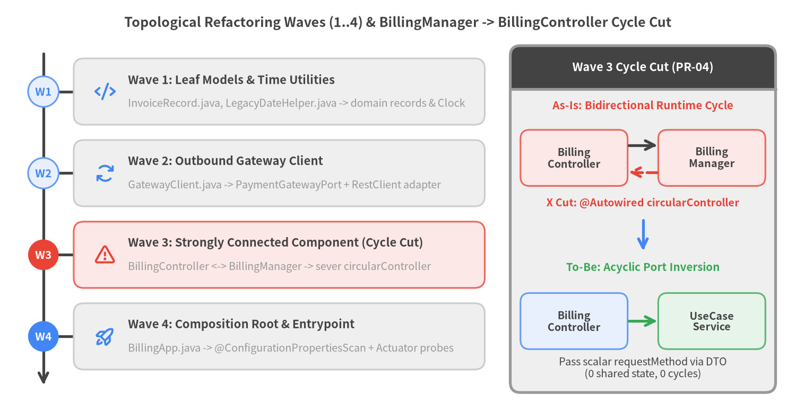
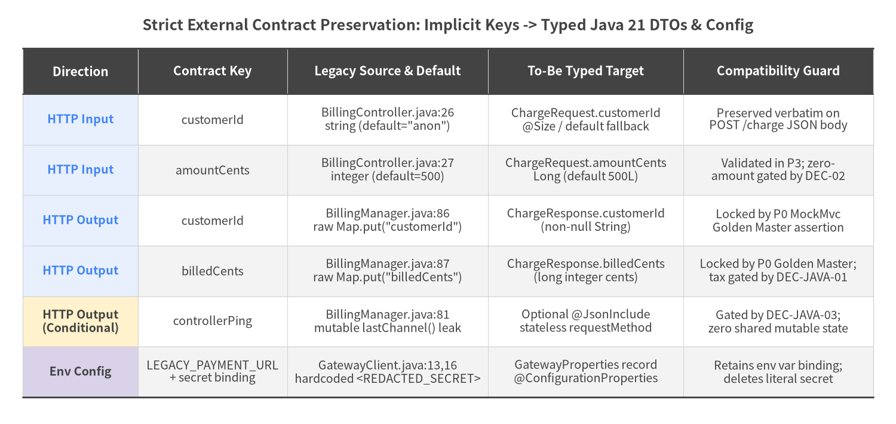
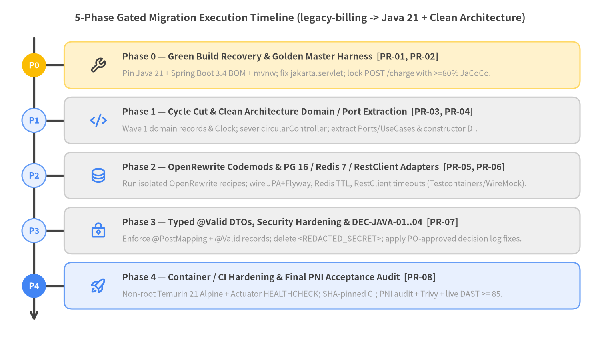
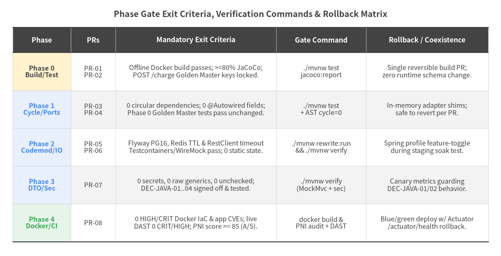
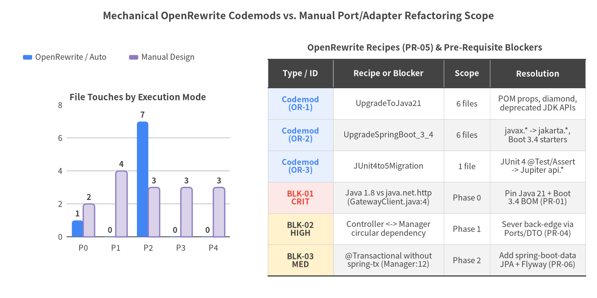
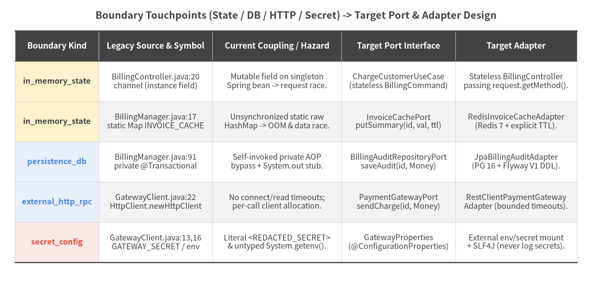
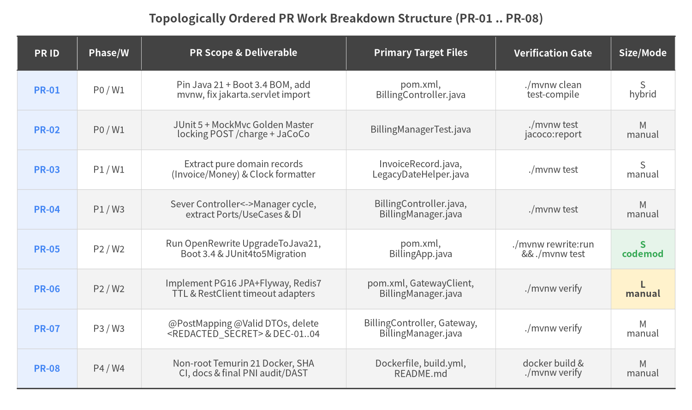

PNI マイグレーション実行計画: legacy-billing
対象リポジトリ: examples/java/api_spring_messy (java_api_spring_messy_migration)
移行ターゲット: Java 1.8 / バージョン未固定 Spring Boot / 循環依存モノリス -> Java 21 LTS + Spring Boot 3.4 + PostgreSQL 16 + Redis 7 + Clean Architecture

マイグレーション計画メタデータ・証跡プロベナンス
| 項目 | 値 |
|---|---|
| プロジェクト名 | legacy-billing (com.example:legacy-billing:0.0.1-SNAPSHOT) |
| 対象ルート | examples/java/api_spring_messy（java、本番コード 6 ファイル / テスト 1 ファイル） |
| ワークフロー ID・実行 ID | java_api_spring_messy_migration（wf-b1c19b56、category=migration、scope=repo） |
前提ベースライン監査 (based_on) |
java_api_spring_messy（wf-8177454c — 66 / 100・グレード C、ルール合格 0/16、Docker Maven ビルド失敗） |
| 計画生成日時 (UTC) | 2026-11-22T11:57:23.102522+00:00（main@d1e02277 (dirty)） |
| 目標アーキテクチャ | Clean Architecture（domain / port / usecase / adapter.in.web / adapter.out.{gateway,persistence,cache}） |
| 目標ランタイム・技術スタック | Java 21 LTS、Spring Boot 3.4.x BOM（Jakarta EE 10）、PostgreSQL 16（JPA + Flyway）、Redis 7（TTL 付き）、Spring RestClient、JUnit 5 + Mockito + JaCoCo |
変換モード (transformation_mode) |
architectural_restructure |
実行戦略 (migration_strategy) |
phased_pr — 5 段階ゲート（Phase 0..Phase 4）、4 トポロジカル Wave、全 8 PR（PR-01..PR-08） |
| API 互換性・バグ方針 | POST /charge の外部 JSON 契約（customerId, amountCents, billedCents）を厳格維持（strict）、曖昧な挙動は 4 件の意思決定ログ（ask_human）で Phase 3 前に合意 |
| 自動コードモッド基盤 | OpenRewrite（UpgradeToJava21, UpgradeSpringBoot_3_4, JUnit4to5Migration） |
| 最終受入ゲート | Maven + 非 root Temurin 21 Docker ビルド成功、CRITICAL/HIGH の SCA/IaC/DAST 検出 0 件、PNI 総合スコア 85 以上（グレード A/S） |
ガバナンスおよび機密保護について: 本マイグレーション実行計画は、PNI501 Workflow v2 の下でベースライン監査
wf-8177454c（java_api_spring_messy）から直接連携生成されたものです。ソースコード上で検出された認証情報リテラル（GatewayClient.GATEWAY_SECRET等）はすべて<REDACTED_SECRET>としてマスク済みであり、既存の曖昧な挙動は Phase 0 ゴールデンマスターテストで固定し、Phase 3 のステークホルダー承認まで暗黙的な仕様変更を行いません。
1. マイグレーション戦略サマリーと多軸ギャップマトリクス
本段階的 PR 実行計画（phased_pr）は、ベースライン監査 wf-8177454c（グレード C・66/100）で多数の課題が確認された legacy-billing を、Java 1.8 / バージョン未固定 Spring Boot / 循環依存モノリスから、Clean Architecture（domain / port / usecase / adapter）を採用した決定論的な Java 21 LTS + Spring Boot 3.4.x + PostgreSQL 16（JPA + Flyway） + Redis 7 サービスへモダナイズします。

Source Code
from drawlib.canvas import save, setup
from drawlib.preset_colors import CssColors
from drawlib.smartarts import Table
from drawlib.styles import Colors, Styles
from drawlib.text import text
setup(width=156, height=88, dpi=150)
text(
(78.0, 83.2),
"Multi-Axis As-Is -> To-Be Transformation Gap Matrix (7 Axes)",
style=Styles.DarkBold.patch(text_size=12.5),
)
table = Table(
cell_style=Styles.Neutral,
text_style=Styles.Dark.patch(text_size=9.5),
header_cell_style=Styles.PrimaryFlat,
header_text_style=Styles.WhiteBold.patch(text_size=10.0),
border_style=Styles.MutedThin,
)
table.set_style_cell_evenodd(
even_color=Colors.Light,
even_text_style=Styles.Dark.patch(text_size=9.5),
odd_color=Colors.White,
odd_text_style=Styles.Dark.patch(text_size=9.5),
)
table.set_style_cell_header(
background_color=Colors.Dark,
text_style=Styles.WhiteBold.patch(text_size=10.0),
)
table.set_style_cell(
background_color=Styles.PrimaryNeutral.shape_fill_color,
text_style=Styles.DarkBold.patch(text_size=9.5),
rows=[1, 2, 3, 4, 5, 6, 7],
columns=[0],
)
table.set_style_cell(
background_color=Styles.DangerNeutral.shape_fill_color,
text_style=Styles.DangerBold.patch(text_size=9.5),
rows=[1, 2, 6, 7],
columns=[3],
)
table.set_style_cell(
background_color=Styles.WarningNeutral.shape_fill_color,
text_style=Styles.WarningBold.patch(text_size=9.5),
rows=[3, 4, 5],
columns=[3],
)
table.set_style_border(
top=Styles.DarkBold.patch(line_width=1.4),
top2=Styles.DarkBold.patch(line_width=1.0),
bottom=Styles.DarkBold.patch(line_width=1.4),
between_rows=Styles.MutedThin.patch(line_color=CssColors.LightGray, line_width=0.6),
between_columns=Styles.MutedThin.patch(line_color=CssColors.LightGray, line_width=0.5),
)
data = [
["Axis", "As-Is Baseline (66/100)", "To-Be Target State", "Risk", "Execution Approach"],
[
"1. Runtime\n(language)",
"Java 1.8 vs java.net.http &\nBoot 4.2.0; Date/Vector",
"Java 21 LTS + mvnw, records,\njava.time Clock & List",
"CRITICAL",
"P0 toolchain, W1 domain,\nP2 UpgradeToJava21",
],
[
"2. Framework\n(Spring/Test)",
"Boot LATEST, javax.servlet,\nJUnit 4, @Autowired fields",
"Spring Boot 3.4 BOM, Jakarta,\nJUnit 5 + Mockito + JaCoCo",
"CRITICAL",
"P0 BOM pin + Golden Master,\nP2 OpenRewrite Boot 3.4",
],
[
"3. Architecture\n(Clean Arch)",
"Controller <-> Manager cycle,\ncognitive=56 god method",
"Inward Clean Arch: domain,\nport, usecase, adapter",
"HIGH",
"Leaf-first Waves 1->4,\nP1 cycle cut (PR-04)",
],
[
"4. Database\n(Persistence)",
"Private @Transactional stub\n(no spring-tx), System.out",
"PostgreSQL 16 JPA + Flyway\nV1 DDL & public @Transactional",
"HIGH",
"P1 RepositoryPort shim,\nP2 JPA + Testcontainers",
],
[
"5. Cache/State\n(Concurrency)",
"Static raw INVOICE_CACHE &\nmutable singleton channel",
"Stateless beans + Redis 7\nStringRedisTemplate w/ TTL",
"HIGH",
"W3 delete channel field,\nP2 Redis adapter (PR-06)",
],
[
"6. Security\n(Auth/Boundary)",
"Hardcoded <REDACTED_SECRET>,\nunbounded HTTP, ANY /charge",
"@ConfigurationProperties,\nRestClient timeouts, @Valid",
"CRITICAL",
"P0 clear CVE range, P2\nRestClient, P3 DTO/secrets",
],
[
"7. Container\n& CI/CD",
"Root openjdk:latest, no probe,\npull_request_target @main",
"Multi-stage Temurin 21 Alpine\nnon-root + SHA-pinned CI",
"CRITICAL",
"P4 hardened Docker/CI +\nPNI audit, Trivy & DAST",
],
]
table.draw_flexible(
xy=(4.0, 78.5),
column_widths=[24.0, 40.0, 40.0, 14.0, 30.0],
row_heights=[8.0, 9.2, 9.2, 9.2, 9.2, 9.2, 9.2, 9.2],
data=data,
align="top_left",
)
save()
モダナイゼーションのエグゼクティブ要約
ベースライン監査 wf-8177454c（java_api_spring_messy）では、pom.xml が Java 1.8 を指定している一方で GatewayClient.java が Java 11 の java.net.http を import し、かつ spring-boot-starter-web:LATEST が Spring Boot 4.2.0（バイトコード 61.0）を解決してしまうため、クリーンな Maven / Docker 環境でのビルドが失敗することが確認されています。さらに、BillingController と BillingManager 間の実行時循環依存（circularController）、同期化されていない可変シングルトン・静的キャッシュ（channel、INVOICE_CACHE）、空の catch による例外握り潰し、および全 HTTP メソッドを受け入れる未検証の @RequestMapping("/charge") が運用リスクを高めています。
ハイラムの法則（Hyrum's Law）による暗黙的破壊を防ぐため、一括書き換えではなく 5 段階ゲート方式の段階的 PR（phased_pr） で安全に移行を進めます。
- Phase 0（
PR-01,PR-02）: Java 21 LTS + Spring Boot 3.4.x BOM でビルドを復旧し、JUnit 5 + MockMvc のゴールデンマスター特性テストによりPOST /charge契約（customerId,amountCents,billedCents）を厳格に固定します。 - Phase 1（
PR-03,PR-04）: 依存ゼロの末端モジュール（Wave 1）から純粋なドメイン層を抽出し、Wave 3 でBillingManager -> BillingController循環エッジを切断して入出力 Port と一時的なインメモリ・シムを整備します。 - Phase 2（
PR-05,PR-06）: 機械的な OpenRewrite コードモッド差分をPR-05に隔離した上で、PR-06にて Testcontainers / WireMock で検証済みの PostgreSQL 16（JPA + Flyway）、Redis 7（TTL 付き）、タイムアウト付き SpringRestClientアダプタへ差し替えます。 - Phase 3（
PR-07）:@PostMapping("/charge")と@ValidJava 21 レコード DTO を導入し、ハードコードされたGATEWAY_SECRET（<REDACTED_SECRET>）を排除して SLF4J 構造化ロギングとステークホルダー承認済みの意思決定項目（DEC-JAVA-01..DEC-JAVA-04）を適用します。 - Phase 4（
PR-08）: 破綻した root 実行のopenjdk:latestDockerfile と特権pull_request_targetCI を、マルチステージ非 rooteclipse-temurin:21-jre-alpine、Actuator/actuator/healthプローブ、およびコミット SHA 固定 CI へ刷新し、最終 PNI v2 監査・Trivy・ライブ DAST を通過させます。

Source Code
from drawlib.canvas import save, setup
from drawlib.charts.bar import BarChart
from drawlib.smartarts import KpiCards
from drawlib.styles import Styles
setup(width=150, height=70, dpi=150)
# Left: Grouped BarChart comparing PR Count vs Relative Effort Units per Phase
chart = BarChart(
axis_line_style=Styles.Dark.patch(line_width=1.0),
categories=["Phase 0\nBuild/Test", "Phase 1\nCycle/Ports", "Phase 2\nCodemod/IO", "Phase 3\nDTO/Sec", "Phase 4\nDocker/CI"],
width=80.0,
height=44.0,
bar_mode="group",
bar_width_ratio=0.68,
bar_r=0.8,
title="Phased PR Volume & Relative Effort (S=1, M=2, L=3)",
title_style=Styles.DarkBold.patch(text_size=11.5),
axis_text_style=Styles.Dark.patch(text_size=9.5),
grid_style=Styles.MutedThin,
value_text_style=Styles.DarkBold.patch(text_size=9.5),
value_format="{:.0f}",
)
chart.add_series("PR Count", [2.0, 2.0, 2.0, 1.0, 1.0], style=Styles.SecondaryNeutral)
chart.add_series("Effort Units (S=1,M=2,L=3)", [3.0, 3.0, 4.0, 2.0, 2.0], style=Styles.PrimaryFlat)
chart.configure_y_axis(min_value=0.0, max_value=5.0, tick_step=1.0, label="Count / Units")
chart.draw(xy=(10.0, 11.0))
chart.draw_legend(xy=(14.0, 63.0), text_style=Styles.Dark.patch(text_size=9.5), orientation="horizontal")
# Right: Risk & Scope Summary KPI Stack
kpis = KpiCards(
style=Styles.Neutral.patch(shape_r=2.0),
metric_style=Styles.DarkBold.patch(text_size=13.0),
text_style=Styles.DarkBold.patch(text_size=10.0),
description_style=Styles.Muted.patch(text_size=9.5),
accent_style=Styles.PrimaryFlat,
accent_position="left_pill",
metric_layout="left_column",
metric_width_ratio=0.34,
spacing=2.6,
)
kpis.add(
"4 CRIT",
"Critical Risk Axes",
"Runtime, Framework, Sec, CI",
style=Styles.DangerNeutral.patch(shape_r=2.0),
metric_style=Styles.DangerBold.patch(text_size=12.5),
accent_style=Styles.DangerFlat,
)
kpis.add(
"3 HIGH",
"High Risk Axes",
"Clean Arch, PostgreSQL, Redis",
style=Styles.WarningNeutral.patch(shape_r=2.0),
metric_style=Styles.WarningBold.patch(text_size=12.5),
accent_style=Styles.WarningFlat,
)
kpis.add(
"8 PRs",
"Total Effort: 14 Units",
"3 Small | 4 Medium | 1 Large",
style=Styles.PrimaryNeutral.patch(shape_r=2.0),
metric_style=Styles.PrimaryBold.patch(text_size=12.5),
accent_style=Styles.PrimaryFlat,
)
kpis.add(
">= 85",
"Exit Quality Gate",
"From 66 (C) to Grade A/S",
style=Styles.Neutral.patch(shape_r=2.0),
metric_style=Styles.SuccessBold.patch(text_size=12.5),
accent_style=Styles.SuccessFlat,
)
kpis.draw(xy=(96.0, 8.0), width=50.0, height=56.0, columns=1)
save()
合意済み前提条件（Assumptions）と明示的非対象（Non-Goals）
PR 分割に先立ち、スコープ境界と非対象項目を明確に固定しています。
| 区分 | 合意済み決定事項・ガードレール |
|---|---|
| 合意済み前提 | ランタイムおよびフレームワークは Java 21 LTS + Spring Boot 3.4.x BOM（Jakarta EE 10、JUnit 5 Jupiter、Mockito、JaCoCo）に固定する。 |
| 合意済み前提 | 永続化は PostgreSQL 16（Spring Data JPA + Flyway バージョン管理 DDL V1__create_billing_audit.sql）へ外部化する。 |
| 合意済み前提 | プロセス内の BillingManager.INVOICE_CACHE は、明示的 TTL を備えた Redis 7（StringRedisTemplate / Spring Data Redis）へ外部化する。 |
| 合意済み前提 | POST /charge の外部 HTTP JSON 契約（customerId, amountCents, billedCents）に対する 厳格な互換性（strict） を維持する。 |
| 合意済み前提 | 曖昧な既存挙動（controllerPing キー、String == 参照比較、固定 100L リトライ課金、空の catch）は ask_human 方針に従い Phase 3 前のステークホルダー意思決定ログへ隔離する。 |
| 明示的非対象（Out of Scope） | マイクロサービス分割や複数アーティファクトへのリポジトリ分割は行わず、単一デプロイ可能な Maven アーティファクト（com.example:legacy-billing）を維持する。 |
| 明示的非対象（Out of Scope） | 本移行ウェーブでは Kafka や RabbitMQ 等のイベントバスは導入しない。 |
| 明示的非対象（Out of Scope） | /charge における破壊的な URL パス変更や /v2/charge バージョニングは導入しない。 |
7 軸モダナイゼーション詳細マトリクス
移行軸 (category) |
リスク | 影響ファイル | 現状ベースライン (As-Is) | 目標状態 (To-Be) |
|---|---|---|---|---|
language_runtime |
CRITICAL | pom.xml, GatewayClient.java, LegacyDateHelper.java |
pom.xml が Java 1.8 を指定し java.net.http（Java 11+）および Boot 4.2.0 バイトコード 61.0 と衝突。LegacyDateHelper は非スレッドセーフな SimpleDateFormat・Date・Vector を使用。 |
Java 21 LTS ツールチェーン + Maven Wrapper（mvnw）、不変 Java 21 record、java.time.Instant / DateTimeFormatter / Clock、List/ArrayList。 |
framework |
CRITICAL | pom.xml, BillingApp.java, BillingController.java, BillingManager.java, BillingManagerTest.java |
BOM なしの spring-boot-starter-web:LATEST、javax.servlet:4.0.1、アサーション不在の JUnit 4.13.2 テスト、@Autowired フィールド注入、全メソッド許可の @RequestMapping、spring-tx 欠落。 |
固定された Spring Boot 3.4.x BOM、jakarta.servlet / jakarta.validation、Spring RestClient、コンストラクタ DI、@PostMapping("/charge")、JUnit 5 Jupiter + Mockito + JaCoCo。 |
architecture_pattern |
HIGH | InvoiceRecord.java, BillingController.java, BillingManager.java, GatewayClient.java |
実行時循環依存 BillingController <-> BillingManager（circularController）、認知的複雑度 cognitive=56（引数 8 個）の肥大メソッド、raw Map/List ペイロード。 |
内向き依存のみの厳格な Clean Architecture：フレームワーク非依存の domain レコードと TaxPolicy、入出力 port インターフェース、純粋な usecase、隔離された adapter 群。 |
database_persistence |
HIGH | pom.xml, BillingManager.java |
BillingManager.saveAuditTrail() が private @Transactional（Spring AOP 自己呼び出しで無効化、spring-tx も未宣言）を使用し System.out へ出力。 |
PostgreSQL 16 と Flyway V1__create_billing_audit.sql、public @Transactional を備えた JpaBillingAuditAdapter が実装する BillingAuditRepositoryPort。 |
cache_state |
HIGH | BillingController.java, BillingManager.java |
同期化されていない静的 raw Map（BillingManager.INVOICE_CACHE）およびシングルトン可変フィールド（BillingController.channel）によるリクエスト間データ競合。 |
ステートレスな Controller / UseCase、および明示的 TTL を持つ Redis 7 StringRedisTemplate 実装の RedisInvoiceCacheAdapter（InvoiceCachePort）。 |
auth_security |
CRITICAL | GatewayClient.java, BillingController.java, pom.xml |
GatewayClient.java:13 のハードコード秘密鍵 GATEWAY_SECRET（<REDACTED_SECRET>）、型なし System.getenv、タイムアウトなしの HttpClient.newHttpClient()、無認証 ANY /charge、未固定 CVE-2022-22965 範囲。 |
@ConfigurationProperties による機密・エンドポイント設定、タイムアウト制限付き RestClient、@PostMapping("/charge") + @Valid ChargeRequest、認証フィルタ、SLF4J 構造化ロギング。 |
container_cicd |
CRITICAL | Dockerfile, .github/workflows/build.yml |
削除済みタグの FROM openjdk:latest（root 実行、.dockerignore・HEALTHCHECK なし）、および permissions 未設定の pull_request_target + actions/checkout@main。 |
マルチステージ eclipse-temurin:21-jdk / 21-jre-alpine 非 root イメージ + .dockerignore + Actuator HEALTHCHECK、contents: read・コミット SHA 固定の pull_request CI。 |
2. 目標アーキテクチャ、リファクタリング Wave およびデータ契約
BillingController <-> BillingManager 間の循環依存を断ち切り、ビジネスロジックをインフラ詳細から分離するため、legacy-billing を Java 21 LTS + Spring Boot 3.4 上の Clean Architecture（ヘキサゴナル / Ports & Adapters） へ移行します。移行作業は末端依存から順に 4 つのトポロジカル Wave に沿って実行します。

Source Code
from drawlib.canvas import save, setup
from drawlib.diagrams.class_diagram import ClassDiagram, ClassNode
from drawlib.fonts import FontRoboto, FontSourceCode
from drawlib.shapes import rectangle
from drawlib.styles import Colors, Styles
from drawlib.text import text
setup(width=208, height=116, dpi=150)
# Top canvas title well above the 4 Clean Architecture layer bands
text(
(104.0, 111.0),
"Target Clean Architecture: Strict Inward Dependencies & Port/Adapter Inversion",
style=Styles.DarkBold.patch(text_size=12.5),
)
# Subtle layer backdrop bands (y=4..105, band titles at y=101.2, class boxes below y=94)
bands = [
(27.0, 54.5, 46.0, 100.0, "1. adapter.in.web", Styles.Neutral),
(79.0, 54.5, 50.0, 100.0, "2. port.in / usecase / domain", Styles.PrimaryNeutral.patch(shape_fill_color=Colors.Light)),
(131.0, 54.5, 46.0, 100.0, "3. port.out (SPI)", Styles.SecondaryNeutral.patch(shape_fill_color=Colors.Light)),
(181.0, 54.5, 46.0, 100.0, "4. adapter.out.*", Styles.Neutral),
]
for cx, cy, bw, bh, title, st in bands:
rectangle(
(cx, cy),
width=bw,
height=bh,
style=st.patch(shape_r=2.0, shape_line_style="dashed", shape_line_width=1.0),
)
text((cx, cy + bh / 2.0 - 3.2), title, style=Styles.DarkBold.patch(text_size=10.0))
hdr_primary = Styles.PrimaryNeutral.patch(text_font=FontRoboto.ROBOTO_BOLD, text_color=Colors.Dark, text_size=9.5)
hdr_secondary = Styles.SecondaryNeutral.patch(text_font=FontRoboto.ROBOTO_BOLD, text_color=Colors.Dark, text_size=9.5)
hdr_success = Styles.SuccessNeutral.patch(text_font=FontRoboto.ROBOTO_BOLD, text_color=Colors.Dark, text_size=9.5)
hdr_neutral = Styles.Neutral.patch(text_font=FontRoboto.ROBOTO_BOLD, text_color=Colors.Dark, text_size=9.5)
cd = ClassDiagram(
node_style=Styles.Neutral.patch(text_font=FontSourceCode.ROBOTO_MONO, text_color=Colors.Dark, text_size=9.5),
header_style=hdr_primary,
edge_style=Styles.DarkBold,
edge_text_style=Styles.Dark.patch(text_size=9.5),
)
# Column 1: Inbound Web Adapter (com.example.billing.adapter.in.web)
ctrl = cd.add(
ClassNode("BillingController", stereotype="adapter.in.web", width=40.0, header_style=hdr_primary)
.add_attribute("useCase", "ChargeUseCase", visibility="-")
.add_method("charge", "req", "ChargeResp"),
xy=(23.0, 74.0),
)
dtos = cd.add(
ClassNode("ChargeRequest / Resp", stereotype="record DTO", width=40.0, header_style=hdr_neutral)
.add_attribute("customerId", "String", visibility="+")
.add_attribute("amountCents", "long", visibility="+")
.add_attribute("billedCents", "long", visibility="+"),
xy=(23.0, 28.0),
)
# Column 2: Inbound Port, UseCase & Pure Domain Core
in_port = cd.add(
ClassNode("ChargeCustomerUseCase", stereotype="interface", width=44.0, header_style=hdr_secondary)
.add_method("charge", "BillingCmd", "Summary"),
xy=(75.0, 80.0),
)
usecase = cd.add(
ClassNode("ProcessBatchBillingSvc", stereotype="usecase", width=44.0, header_style=hdr_primary)
.add_attribute("gateway", "PaymentGatewayPort", visibility="-")
.add_attribute("cache", "InvoiceCachePort", visibility="-")
.add_attribute("audit", "BillingAuditRepoPort", visibility="-")
.add_method("charge", "BillingCmd", "Summary"),
xy=(75.0, 50.0),
)
domain = cd.add(
ClassNode("Invoice / Money / Tax", stereotype="domain record", width=44.0, header_style=hdr_success)
.add_attribute("invoiceId", "String", visibility="+")
.add_attribute("currency", "Currency", visibility="+")
.add_method("computeTax", "Money, Cur", "Money")
.add_method("formatPeriod", "Clock", "String"),
xy=(75.0, 18.0),
)
# Column 3: Outbound SPI Ports (com.example.billing.port)
gw_port = cd.add(
ClassNode("PaymentGatewayPort", stereotype="interface", width=40.0, header_style=hdr_secondary)
.add_method("sendCharge", "id, Money", "bool"),
xy=(127.0, 80.0),
)
cache_port = cd.add(
ClassNode("InvoiceCachePort", stereotype="interface", width=40.0, header_style=hdr_secondary)
.add_method("putSummary", "id, val, ttl", "void"),
xy=(127.0, 50.0),
)
audit_port = cd.add(
ClassNode("BillingAuditRepoPort", stereotype="interface", width=40.0, header_style=hdr_secondary)
.add_method("saveAudit", "id, Money", "void"),
xy=(127.0, 20.0),
)
# Column 4: Outbound Infrastructure Adapters (com.example.billing.adapter.out.*)
gw_adapter = cd.add(
ClassNode("RestGatewayAdapter", stereotype="adapter.out.gw", width=40.0, header_style=hdr_neutral)
.add_attribute("props", "GatewayProps", visibility="-")
.add_method("sendCharge", "id, Money", "bool"),
xy=(177.0, 80.0),
)
cache_adapter = cd.add(
ClassNode("RedisCacheAdapter", stereotype="adapter.out.cache", width=40.0, header_style=hdr_neutral)
.add_attribute("redis", "StringRedisTpl", visibility="-")
.add_method("putSummary", "id, val, ttl", "void"),
xy=(177.0, 50.0),
)
audit_adapter = cd.add(
ClassNode("JpaBillingAuditAdapter", stereotype="adapter.out.db", width=40.0, header_style=hdr_neutral)
.add_attribute("repo", "AuditJpaRepo", visibility="-")
.add_method("saveAudit", "id, Money", "void"),
xy=(177.0, 20.0),
)
# Inward dependencies & Dependency Inversion realizations (zero crossings)
cd.connect(ctrl, in_port, "dependency", start_side="right", end_side="left")
cd.connect(ctrl, dtos, "dependency", start_side="bottom", end_side="top")
cd.connect(usecase, in_port, "realization", start_side="top", end_side="bottom")
cd.connect(usecase, domain, "dependency", start_side="bottom", end_side="top")
cd.connect(usecase, gw_port, "dependency", start_side="right", end_side="left")
cd.connect(usecase, cache_port, "dependency", start_side="right", end_side="left")
cd.connect(usecase, audit_port, "dependency", start_side="right", end_side="left")
cd.connect(gw_adapter, gw_port, "realization", start_side="left", end_side="right")
cd.connect(cache_adapter, cache_port, "realization", start_side="left", end_side="right")
cd.connect(audit_adapter, audit_port, "realization", start_side="left", end_side="right")
cd.draw(xy=(4.0, 4.0))
save()
アーキテクチャ依存ルールと同心円レイヤー境界
目標パッケージ構造では、ArchUnit や静的 import 検査で検証可能な「内向き依存のみ」の原則を強制します。
| 目標レイヤー | パッケージ | 責務 | 許可される依存先 | 禁止される import |
|---|---|---|---|---|
| Domain Layer | com.example.billing.domain |
純粋な Java 21 不変レコード（Invoice, Money, BillingSummary）、Currency/InvoiceStatus 列挙型、決定論的 TaxPolicy、および BillingPeriodFormatter。 |
（なし — 外部依存ゼロ） | org.springframework.*, jakarta.persistence.*, jakarta.servlet.*, java.net.http.* |
| Port Layer | com.example.billing.port |
インバウンド UseCase 契約（ChargeCustomerUseCase, ProcessBatchBillingUseCase）およびアウトバウンド SPI 契約（PaymentGatewayPort, InvoiceCachePort, BillingAuditRepositoryPort）。 |
Domain Layer |
org.springframework.web.*, jakarta.persistence.* |
| UseCase Layer | com.example.billing.usecase |
上位 Controller 参照を持たず、税計算・有界リトライ・キャッシュ更新・監査永続化を統括する純粋オーケストレーション層（ProcessBatchBillingService）。 |
Domain Layer, Port Layer |
com.example.billing.adapter.*, org.springframework.web.* |
| Inbound Web Adapter | com.example.billing.adapter.in.web |
ステートレスな BillingController（@PostMapping("/charge")）、厳格な外部 JSON キーを保持する @Valid ChargeRequest/ChargeResponse DTO、例外マッピング。 |
Port Layer, Domain Layer |
com.example.billing.adapter.out.* |
| Outbound Infrastructure Adapters | com.example.billing.adapter.out |
RestClientPaymentGatewayAdapter（タイムアウト + @ConfigurationProperties）、JpaBillingAuditAdapter（PostgreSQL 16 + Flyway + public @Transactional）、RedisInvoiceCacheAdapter（Redis 7 TTL）。 |
Port Layer, Domain Layer |
com.example.billing.adapter.in.* |
トポロジカル・リファクタリング Wave（1..4）と循環切断
決定論的 import DAG 解析により、本番 Java ソース 6 ファイルを末端から 4 つの Wave に分割しています。内部依存ゼロの Wave 1 を最初に型安全化し、Wave 3 で強連結成分（BillingController <-> BillingManager）の上向きバックエッジ BillingManager.circularController -> BillingController を切断した上で、Wave 4 のコンポジションルート結線を完了します。

Source Code
from drawlib.canvas import save, setup
from drawlib.icons import phosphor
from drawlib.lines import line
from drawlib.shapes import rectangle
from drawlib.smartarts import Panel, Roadmap
from drawlib.styles import Colors, Styles
from drawlib.text import text
setup(width=156, height=82, dpi=150)
text(
(78.0, 77.5),
"Topological Refactoring Waves (1..4) & BillingManager -> BillingController Cycle Cut",
style=Styles.DarkBold.patch(text_size=12.0),
)
# Left: Vertical Roadmap of Waves 1..4
rm = Roadmap(
style=Styles.Neutral.patch(shape_r=2.0),
text_style=Styles.DarkBold.patch(text_size=10.5),
description_style=Styles.Muted.patch(text_size=9.5),
spine_style=Styles.DarkBold,
badge_style=Styles.PrimaryNeutral,
badge_text_style=Styles.PrimaryBold.patch(text_size=9.8),
icon_style=Styles.PrimaryBold,
direction="vertical",
curve_bend=0.0,
card_shape="rounded_rect",
spacing=2.6,
)
rm.add(
"Wave 1: Leaf Models & Time Utilities",
"InvoiceRecord.java, LegacyDateHelper.java -> domain records & Clock",
badge_text="W1",
icon=phosphor.code,
)
rm.add(
"Wave 2: Outbound Gateway Client",
"GatewayClient.java -> PaymentGatewayPort + RestClient adapter",
badge_text="W2",
icon=phosphor.arrows_clockwise,
)
rm.add(
"Wave 3: Strongly Connected Component (Cycle Cut)",
"BillingController <-> BillingManager -> sever circularController",
badge_text="W3",
icon=phosphor.warning,
style=Styles.DangerNeutral.patch(shape_r=2.0),
badge_style=Styles.DangerFlat,
badge_text_style=Styles.WhiteBold.patch(text_size=9.8),
icon_style=Styles.DangerBold,
)
rm.add(
"Wave 4: Composition Root & Entrypoint",
"BillingApp.java -> @ConfigurationPropertiesScan + Actuator probes",
badge_text="W4",
icon=phosphor.rocket_launch,
badge_style=Styles.PrimaryFlat,
badge_text_style=Styles.WhiteBold.patch(text_size=9.8),
)
rm.draw(xy=(4.0, 5.0), width=92.0, height=68.0)
# Right: Cycle-Cut Before/After Panel
cut_panel = Panel(
"Wave 3 Cycle Cut (PR-04)",
style=Styles.Neutral.patch(shape_r=2.0),
header_style=Styles.DarkBold.patch(shape_fill_color=Colors.Dark),
text_style=Styles.WhiteBold.patch(text_size=10.5),
header_variant="filled",
header_height=8.5,
header_align="center",
)
cut_panel.draw((100.0, 5.0), width=52.0, height=68.0)
# As-Is Cyclic Box (Top half inside panel)
text((126.0, 61.2), "As-Is: Bidirectional Runtime Cycle", style=Styles.DangerBold.patch(text_size=9.8))
rectangle(
(112.5, 51.0),
width=21.0,
height=11.0,
style=Styles.DangerNeutral.patch(shape_r=1.8),
text="Billing\nController",
text_style=Styles.DarkBold.patch(text_size=9.5),
)
rectangle(
(139.5, 51.0),
width=21.0,
height=11.0,
style=Styles.DangerNeutral.patch(shape_r=1.8),
text="Billing\nManager",
text_style=Styles.DarkBold.patch(text_size=9.5),
)
line((123.2, 53.5), (128.8, 53.5), arrow_head="->", style=Styles.DarkBold)
line((128.8, 48.2), (123.2, 48.2), arrow_head="->", style=Styles.DangerDashedBold)
text((126.0, 42.2), "X Cut: @Autowired circularController", style=Styles.DangerBold.patch(text_size=9.5))
# Transition arrow down
line((126.0, 38.8), (126.0, 32.8), arrow_head="->", style=Styles.PrimaryBold)
# To-Be Acyclic Box (Bottom half inside panel)
text((126.0, 29.5), "To-Be: Acyclic Port Inversion", style=Styles.SuccessBold.patch(text_size=9.8))
rectangle(
(112.5, 19.0),
width=21.0,
height=11.0,
style=Styles.PrimaryNeutral.patch(shape_r=1.8),
text="Billing\nController",
text_style=Styles.DarkBold.patch(text_size=9.5),
)
rectangle(
(139.5, 19.0),
width=21.0,
height=11.0,
style=Styles.SuccessNeutral.patch(shape_r=1.8),
text="UseCase\nService",
text_style=Styles.DarkBold.patch(text_size=9.5),
)
line((123.2, 19.0), (128.8, 19.0), arrow_head="->", style=Styles.SuccessBold)
text((126.0, 9.8), "Pass scalar requestMethod via DTO\n(0 shared state, 0 cycles)", style=Styles.Dark.patch(text_size=9.5))
save()
As-Is -> To-Be コンポーネントおよび Port/Adapter マッピング
| 既存ソース・シンボル | Wave | 移行先レイヤー | To-Be コンポーネントと役割 | 主なリファクタリング内容 |
|---|---|---|---|---|
model/InvoiceRecord.java (InvoiceRecord) |
Wave 1 | Domain Layer | com.example.billing.domain.Invoice / Money （純粋 Java 21 レコード） |
クラスを不変 Java 21 record へ変換し、非負金額などの不変条件チェックを追加。 |
util/LegacyDateHelper.java (LegacyDateHelper) |
Wave 1 | Domain Layer | com.example.billing.domain.BillingPeriodFormatter （ドメイン時刻ポリシー） |
SimpleDateFormat・Date・Vector をスレッドセーフな DateTimeFormatter・Clock・List<String> へ置換。 |
client/GatewayClient.java (sendCharge) |
Wave 2 | Outbound Adapters | adapter.out.gateway.RestClientPaymentGatewayAdapter （PaymentGatewayPort 実装） |
LEGACY_PAYMENT_URL と GATEWAY_SECRET（<REDACTED_SECRET>）を @ConfigurationProperties へ外部化し、接続・読取タイムアウト付き RestClient と SLF4J へ置換。 |
service/BillingManager.java (processBatchBilling) |
Wave 3 | UseCase Layer | usecase.ProcessBatchBillingService （ProcessBatchBillingUseCase 実装） |
@Autowired circularController を切断し、cognitive=56・引数 8 個のメソッドを BillingCommand + TaxPolicy へ分解して 3 つのアウトバウンド Port に委譲。 |
service/BillingManager.java (INVOICE_CACHE) |
Wave 3 | Outbound Adapters | adapter.out.cache.RedisInvoiceCacheAdapter （InvoiceCachePort 実装） |
非同期の静的 raw HashMap を、明示的 TTL 付きの Redis 7 StringRedisTemplate 実装へ移行。 |
service/BillingManager.java (saveAuditTrail) |
Wave 3 | Outbound Adapters | adapter.out.persistence.JpaBillingAuditAdapter （BillingAuditRepositoryPort 実装） |
無効な private @Transactional + System.out スタブを、PostgreSQL 16 JPA リポジトリ + Flyway DDL + public @Transactional へ置換。 |
controller/BillingController.java (chargeCustomer) |
Wave 3/4 | Inbound Web Adapter | adapter.in.web.BillingController （インバウンド HTTP アダプタ） |
可変フィールド channel を削除し、@PostMapping("/charge") + @Valid ChargeRequest へ厳格化。JSON 出力キーを維持しつつ ChargeCustomerUseCase をコンストラクタ DI。 |
BillingApp.java (BillingApp) |
Wave 4 | Composition Root | com.example.billing.BillingApp + BillingConfiguration |
@ConfigurationPropertiesScan の有効化、アダプタ Bean の結線、Spring Boot Actuator ヘルスプローブの公開。 |
暗黙的 HTTP / 環境変数契約から型付き DTO へのマッピング
api_compatibility=strict に基づき、静的 AST 解析で検出されたすべての暗黙的 JSON キーおよび環境変数契約を、Java 21 レコード DTO と @ConfigurationProperties へ明示的に対応付けます。

Source Code
from drawlib.canvas import save, setup
from drawlib.preset_colors import CssColors
from drawlib.smartarts import Table
from drawlib.styles import Colors, Styles
from drawlib.text import text
setup(width=156, height=74, dpi=150)
text(
(78.0, 69.5),
"Strict External Contract Preservation: Implicit Keys -> Typed Java 21 DTOs & Config",
style=Styles.DarkBold.patch(text_size=12.0),
)
table = Table(
cell_style=Styles.Neutral,
text_style=Styles.Dark.patch(text_size=9.5),
header_cell_style=Styles.PrimaryFlat,
header_text_style=Styles.WhiteBold.patch(text_size=10.0),
border_style=Styles.MutedThin,
)
table.set_style_cell_evenodd(
even_color=Colors.Light,
even_text_style=Styles.Dark.patch(text_size=9.5),
odd_color=Colors.White,
odd_text_style=Styles.Dark.patch(text_size=9.5),
)
table.set_style_cell_header(
background_color=Colors.Dark,
text_style=Styles.WhiteBold.patch(text_size=10.0),
)
table.set_style_cell(
background_color=Styles.PrimaryNeutral.shape_fill_color,
text_style=Styles.PrimaryBold.patch(text_size=9.5),
rows=[1, 2, 3, 4],
columns=[0],
)
table.set_style_cell(
background_color=Styles.WarningNeutral.shape_fill_color,
text_style=Styles.WarningBold.patch(text_size=9.5),
rows=[5],
columns=[0],
)
table.set_style_cell(
background_color=Styles.SecondaryNeutral.shape_fill_color,
text_style=Styles.DarkBold.patch(text_size=9.5),
rows=[6],
columns=[0],
)
table.set_style_border(
top=Styles.DarkBold.patch(line_width=1.4),
top2=Styles.DarkBold.patch(line_width=1.0),
bottom=Styles.DarkBold.patch(line_width=1.4),
between_rows=Styles.MutedThin.patch(line_color=CssColors.LightGray, line_width=0.6),
between_columns=Styles.MutedThin.patch(line_color=CssColors.LightGray, line_width=0.5),
)
data = [
["Direction", "Contract Key", "Legacy Source & Default", "To-Be Typed Target", "Compatibility Guard"],
[
"HTTP Input",
"customerId",
"BillingController.java:26\nstring (default=\"anon\")",
"ChargeRequest.customerId\n@Size / default fallback",
"Preserved verbatim on\nPOST /charge JSON body",
],
[
"HTTP Input",
"amountCents",
"BillingController.java:27\ninteger (default=500)",
"ChargeRequest.amountCents\nLong (default 500L)",
"Validated in P3; zero-\namount gated by DEC-02",
],
[
"HTTP Output",
"customerId",
"BillingManager.java:86\nraw Map.put(\"customerId\")",
"ChargeResponse.customerId\n(non-null String)",
"Locked by P0 MockMvc\nGolden Master assertion",
],
[
"HTTP Output",
"billedCents",
"BillingManager.java:87\nraw Map.put(\"billedCents\")",
"ChargeResponse.billedCents\n(long integer cents)",
"Locked by P0 Golden Master;\ntax gated by DEC-JAVA-01",
],
[
"HTTP Output\n(Conditional)",
"controllerPing",
"BillingManager.java:81\nmutable lastChannel() leak",
"Optional @JsonInclude\nstateless requestMethod",
"Gated by DEC-JAVA-03;\nzero shared mutable state",
],
[
"Env Config",
"LEGACY_PAYMENT_URL\n+ secret binding",
"GatewayClient.java:13,16\nhardcoded <REDACTED_SECRET>",
"GatewayProperties record\n@ConfigurationProperties",
"Retains env var binding;\ndeletes literal secret",
],
]
table.draw_flexible(
xy=(4.0, 65.5),
column_widths=[20.0, 26.0, 35.0, 34.0, 33.0],
row_heights=[8.0, 8.8, 8.8, 8.8, 8.8, 8.8, 8.8],
data=data,
align="top_left",
)
save()
3. ステークホルダー意思決定ログ（仕様かバグか：Spec vs. Bug）
ハイラムの法則（Hyrum's Law） および本ワークフローの bug_handling_policy: ask_human に従い、BillingManager.java に潜む曖昧なレガシー挙動は、Phase 0〜2 の基盤・Clean Architecture・DB/Redis 移行中に暗黙的に変更してはなりません。影響度の高い 4 項目（DEC-JAVA-01..DEC-JAVA-04）を Phase 0 ゴールデンマスターテストで固定し、Phase 3（PR-07）着手前にプロダクトオーナー（PO）の明示的承認を取得します。

Source Code
from drawlib.canvas import save, setup
from drawlib.preset_colors import CssColors
from drawlib.smartarts import Table
from drawlib.styles import Colors, Styles
from drawlib.text import text
setup(width=156, height=78, dpi=150)
text(
(78.0, 73.5),
"Stakeholder Decision Matrix (Spec vs. Bug — ask_human Governance Gate)",
style=Styles.DarkBold.patch(text_size=12.0),
)
table = Table(
cell_style=Styles.Neutral,
text_style=Styles.Dark.patch(text_size=9.5),
header_cell_style=Styles.PrimaryFlat,
header_text_style=Styles.WhiteBold.patch(text_size=10.0),
border_style=Styles.MutedThin,
)
table.set_style_cell_evenodd(
even_color=Colors.Light,
even_text_style=Styles.Dark.patch(text_size=9.5),
odd_color=Colors.White,
odd_text_style=Styles.Dark.patch(text_size=9.5),
)
table.set_style_cell_header(
background_color=Colors.Dark,
text_style=Styles.WhiteBold.patch(text_size=10.0),
)
table.set_style_cell(
background_color=Styles.WarningNeutral.shape_fill_color,
text_style=Styles.WarningBold.patch(text_size=9.5),
rows=[1, 2, 3, 4],
columns=[0],
)
table.set_style_border(
top=Styles.DarkBold.patch(line_width=1.4),
top2=Styles.DarkBold.patch(line_width=1.0),
bottom=Styles.DarkBold.patch(line_width=1.4),
between_rows=Styles.MutedThin.patch(line_color=CssColors.LightGray, line_width=0.6),
between_columns=Styles.MutedThin.patch(line_color=CssColors.LightGray, line_width=0.5),
)
data = [
["Decision ID", "Source Location", "Observed Legacy Behavior", "Impact if Changed Silently", "Recommended Resolution (P3)"],
[
"DEC-JAVA-01",
"BillingManager\n.java:52,55,57",
"Uses == for status==\"PAID\",\ncurrency==\"USD\"/\"JPY\"; skips\ntax/PAID on HTTP strings.",
"Deserialized inputs begin\nincurring 8%/10% tax and\nchanging billedCents.",
"Fix to Currency/InvoiceStatus\nenums (.equals()) after caller\naudit + release note.",
],
[
"DEC-JAVA-02",
"BillingManager\n.java:65-71",
"When amountCents <= 0 and\nforceRetry=true, sends fixed\n100L charge up to maxRetries.",
"Alters retry fee revenue or\nledger reconciliation for\nzero-amount payloads.",
"Confirm if 100L is auth hold;\nkeep configurable property\nor enforce @Positive.",
],
[
"DEC-JAVA-03",
"BillingManager\n.java:80-82",
"Conditionally emits diagnostic\nkey 'controllerPing' from\nmutable lastChannel() field.",
"Dropping key may break\ndownstream monitor scripts\nunder strict compatibility.",
"Pass request.getMethod() as\nstateless param if needed;\ndeprecate & remove later.",
],
[
"DEC-JAVA-04",
"BillingManager\n.java:83-84",
"Empty catch (Exception e) {}\nswallows audit & cache errors\nand returns HTTP 200.",
"Propagating failures shifts\nHTTP 200 responses to\nHTTP 500/503 on DB fault.",
"SLF4J + correlation ID; fail-\nfast on PostgreSQL audit,\ngraceful warn on Redis miss.",
],
]
table.draw_flexible(
xy=(4.0, 69.5),
column_widths=[19.0, 22.0, 38.0, 33.0, 36.0],
row_heights=[8.0, 14.0, 14.0, 14.0, 14.0],
data=data,
align="top_left",
)
save()
意思決定ガバナンス・ワークフロー（Phase 0 -> Phase 3）
すべての曖昧候補は 4 段階のガバナンス工程を経て処理されるため、基盤刷新の透明性を保ちながら意図的かつ監査可能な形で仕様確定・バグ修正を行えます。

Source Code
from drawlib.canvas import save, setup
from drawlib.icons import phosphor
from drawlib.smartarts import CardList, Panel
from drawlib.styles import Styles
setup(width=150, height=58, dpi=150)
frame = Panel(
"ask_human Decision Governance Flow (Hyrum's Law Safeguard)",
"Zero silent behavioral drift during Phases 0-2",
style=Styles.Neutral.patch(shape_r=2.0),
header_style=Styles.PrimaryNeutral,
text_style=Styles.DarkBold.patch(text_size=11.0),
description_style=Styles.Muted.patch(text_size=9.5),
header_variant="filled",
header_height=8.5,
)
frame.draw((4.0, 4.0), width=142.0, height=50.0)
inner_xy, inner_w, inner_h = frame.get_content_box((4.0, 4.0), width=142.0, height=50.0, padding=(3.5, 3.0))
steps = CardList(
style=Styles.Neutral.patch(shape_r=2.0),
text_style=Styles.DarkBold.patch(text_size=10.5),
description_style=Styles.Muted.patch(text_size=9.5),
badge_shape="circle",
badge_style=Styles.PrimaryNeutral,
badge_text_style=Styles.PrimaryBold.patch(text_size=9.5),
icon_style=Styles.PrimaryBold,
direction="horizontal",
show_arrows=True,
arrow_style=Styles.DarkBold,
spacing=4.0,
)
steps.add(
"1. Characterize",
"Phase 0 (PR-02)\nLock current quirks\nin MockMvc tests",
icon=phosphor.flask,
)
steps.add(
"2. Quarantine",
"Phases 1-2 (PR-03..06)\nRefactor ports/DB/Redis\nwith zero semantic drift",
icon=phosphor.shield_check,
)
steps.add(
"3. PO Sign-Off",
"Pre-Phase 3 Gate\nResolve DEC-JAVA-01..04\nOption A vs. Option B",
icon=phosphor.users_three,
style=Styles.WarningNeutral.patch(shape_r=2.0),
badge_style=Styles.WarningFlat,
icon_style=Styles.WhiteBold,
)
steps.add(
"4. Execute PR-07",
"Phase 3 Cutover\nApply approved fixes +\nupdate test contracts",
icon=phosphor.check_circle,
badge_style=Styles.PrimaryFlat,
icon_style=Styles.WhiteBold,
)
steps.draw(xy=inner_xy, width=inner_w, height=inner_h)
save()
意思決定レコード詳細と選択肢
DEC-JAVA-01 — status および currency の参照等価比較（==）
- 対象箇所:
src/main/java/com/example/billing/service/BillingManager.java:52,55,57（決定論的候補DEC-03,DEC-04,DEC-05を統合） - 現状挙動:
status == "PAID",currency == "USD",currency == "JPY"に Java の参照比較==を使用しています。現状BillingController.chargeCustomer()はインターン済みリテラル"USD"/"PENDING"を渡しているため HTTP/chargeでは偶然 8% 課税が効きますが、HTTP 経由でデシリアライズされた非インターン文字列ではPAID重複スキップや 8%/10% 課税が暗黙的に無視されます。 - ステークホルダー選択肢:
- Option A（推奨）: Phase 3（
PR-07）で型付きCurrency/InvoiceStatus列挙型（.equals()値比較）へ修正し、明示的なリリースノートと特性テスト更新を添えて展開する。 - Option B: カナリアロールアウト期間中、フィーチャーフラグ配下で従来の参照比較挙動を維持する。
- Option A（推奨）: Phase 3（
DEC-JAVA-02 — 非正金額（amountCents <= 0）に対する固定 100L セントのリトライ課金
- 対象箇所:
src/main/java/com/example/billing/service/BillingManager.java:65-71（決定論的候補DEC-08を統合） - 現状挙動:
rec.getAmountCents() <= 0かつforceRetry == trueの場合、最大maxRetries（2回）までgatewayClient.sendCharge(customerId, 100L)を実行し、成功時に100Lセントをtotalに加算します。 - ステークホルダー選択肢:
- Option A（推奨）: 課金プロダクトオーナーが「最小オーソリ与信枠の仕様」か「レガシーバグ」かを確定するまで
BillingPropertiesで設定可能（既定値100L）として維持し、バグ確定後に@Positiveバリデーションへ切り替える。 - Option B: Phase 3 で
amountCents <= 0を即座に HTTP400 Bad Requestで拒否する。
- Option A（推奨）: 課金プロダクトオーナーが「最小オーソリ与信枠の仕様」か「レガシーバグ」かを確定するまで
DEC-JAVA-03 — 循環シングルトン状態由来の診断キー controllerPing
- 対象箇所:
src/main/java/com/example/billing/service/BillingManager.java:80-82およびBillingController.java:20,41-43（決定論的候補DEC-09を統合） - 現状挙動:
circularController != null && extraContext != nullの条件で、シングルトン Controller の非同期可変フィールドを読み取るcircularController.lastChannel()をレスポンス Map の"controllerPing"キーとして返却します。 - ステークホルダー選択肢:
- Option A（推奨）: Phase 1 で循環参照とデータ競合を即座に解消しつつ厳格互換を守るため、
traceHint指定時はservletRequest.getMethod()をステートレスなリクエスト引数としてBillingCommandに渡し、非推奨ヘッダを付与して段階廃止する。 - Option B: 呼び出し元のログ調査で参照クライアントがゼロと確認できた後、Phase 3 で
controllerPingを完全削除する。
- Option A（推奨）: Phase 1 で循環参照とデータ競合を即座に解消しつつ厳格互換を守るため、
DEC-JAVA-04 — 監査・キャッシュ障害を握り潰す空の catch (Exception e) {}
- 対象箇所:
src/main/java/com/example/billing/service/BillingManager.java:83-84（決定論的候補DEC-02および標準出力ログ候補DEC-01,DEC-06,DEC-07を統合） - 現状挙動:
saveAuditTrail(...)、INVOICE_CACHE.put(...)、controllerPing設定を空のcatch (Exception e) {}で囲み、監査保存やキャッシュ書き込みが失敗しても HTTP200 OKを返却します。 - ステークホルダー選択肢:
- Option A（推奨）: すべての例外を相関 ID 付きで SLF4J 記録した上で、PostgreSQL 監査書き込み障害は フェイルファスト（HTTP
500/503へ伝播）、Redis キャッシュ障害は グレースフルデグレード（警告ログ + メトリクス計上）とする。 - Option B: Phase 2 シャドー検証中は SLF4J ログ記録のみ有効化し、ベストエフォートの HTTP
200を一時維持する。
- Option A（推奨）: すべての例外を相関 ID 付きで SLF4J 記録した上で、PostgreSQL 監査書き込み障害は フェイルファスト（HTTP
厳格な POST /charge 外部契約の保全一覧
| 契約要素 | ベースライン (ANY /charge) |
Phase 0〜2 の挙動 | Phase 3 目標状態 (POST /charge) |
関連決定 |
|---|---|---|---|---|
| HTTP メソッド | 全メソッド許可 @RequestMapping("/charge") |
ゴールデンマスターで POST を固定しつつ維持 |
@PostMapping("/charge") に限定（非 POST は 405） |
厳格 API 互換 |
入力 customerId |
raw Map キー（既定値 "anon"） |
そのまま維持 | ChargeRequest.customerId（@Size、省略時 "anon" フォールバック） |
厳格 API 互換 |
入力 amountCents |
raw Map を Long.parseLong（既定値 500） |
そのまま維持 | ChargeRequest.amountCents（Long、既定値 500L、承認結果に応じ検証） |
DEC-JAVA-02 |
出力 customerId |
raw Map の String |
ゴールデンマスターで固定 | ChargeResponse.customerId |
厳格 API 互換 |
出力 billedCents |
long（インターン済み "USD" に対し Math.round(cents * 1.08)） |
ゴールデンマスターで固定 | ChargeResponse.billedCents（TaxPolicy 列挙型による評価） |
DEC-JAVA-01 |
出力 controllerPing |
可変シングルトン由来の条件付き String |
Wave 3 でステートレスな requestMethod 伝搬へ置換 |
条件付き @JsonInclude(NON_NULL) または非推奨・削除 |
DEC-JAVA-03 |
| 監査/キャッシュ障害時ステータス | 空の catch により無言 HTTP 200 |
シム/アダプタ結線中は現行挙動を維持 | PostgreSQL 障害は 5xx フェイルファスト、Redis 障害は警告フォールバック |
DEC-JAVA-04 |
4. 5 段階ゲート実行ロードマップ
本マイグレーションは 5 つの厳格なゲート付きフェーズ（Phase 0..Phase 4） に分割して実行します。各フェーズには決定論的な出口ゲート基準とロールバック・共存条件を定義し、個々の Pull Request 単位で常にビルド可能・検証可能・切り戻し可能な状態を維持します。

Source Code
from drawlib.canvas import save, setup
from drawlib.icons import phosphor
from drawlib.smartarts import Roadmap
from drawlib.styles import Styles
from drawlib.text import text
setup(width=150, height=86, dpi=150)
text(
(75.0, 81.5),
"5-Phase Gated Migration Execution Timeline (legacy-billing -> Java 21 + Clean Architecture)",
style=Styles.DarkBold.patch(text_size=12.0),
)
rm = Roadmap(
style=Styles.Neutral.patch(shape_r=2.0),
text_style=Styles.DarkBold.patch(text_size=10.5),
description_style=Styles.Muted.patch(text_size=9.5),
spine_style=Styles.DarkBold,
badge_style=Styles.PrimaryNeutral,
badge_text_style=Styles.PrimaryBold.patch(text_size=10.0),
icon_style=Styles.PrimaryBold,
direction="vertical",
curve_bend=0.0,
card_shape="rounded_rect",
spacing=2.4,
)
rm.add(
"Phase 0 — Green Build Recovery & Golden Master Harness [PR-01, PR-02]",
"Pin Java 21 + Spring Boot 3.4 BOM + mvnw; fix jakarta.servlet; lock POST /charge with >=80% JaCoCo.",
badge_text="P0",
icon=phosphor.wrench,
style=Styles.WarningNeutral.patch(shape_r=2.0),
badge_style=Styles.WarningFlat,
badge_text_style=Styles.WhiteBold.patch(text_size=10.0),
icon_style=Styles.WarningBold,
)
rm.add(
"Phase 1 — Cycle Cut & Clean Architecture Domain / Port Extraction [PR-03, PR-04]",
"Wave 1 domain records & Clock; sever circularController; extract Ports/UseCases & constructor DI.",
badge_text="P1",
icon=phosphor.code,
)
rm.add(
"Phase 2 — OpenRewrite Codemods & PG 16 / Redis 7 / RestClient Adapters [PR-05, PR-06]",
"Run isolated OpenRewrite recipes; wire JPA+Flyway, Redis TTL, RestClient timeouts (Testcontainers/WireMock).",
badge_text="P2",
icon=phosphor.database,
)
rm.add(
"Phase 3 — Typed @Valid DTOs, Security Hardening & DEC-JAVA-01..04 [PR-07]",
"Enforce @PostMapping + @Valid records; delete <REDACTED_SECRET>; apply PO-approved decision log fixes.",
badge_text="P3",
icon=phosphor.lock_key,
)
rm.add(
"Phase 4 — Container / CI Hardening & Final PNI Acceptance Audit [PR-08]",
"Non-root Temurin 21 Alpine + Actuator HEALTHCHECK; SHA-pinned CI; PNI audit + Trivy + live DAST >= 85.",
badge_text="P4",
icon=phosphor.rocket_launch,
style=Styles.PrimaryNeutral.patch(shape_r=2.0),
badge_style=Styles.PrimaryFlat,
badge_text_style=Styles.WhiteBold.patch(text_size=10.0),
icon_style=Styles.PrimaryBold,
)
rm.draw(xy=(4.0, 4.0), width=142.0, height=74.0)
save()
フェーズ別出口ゲート基準とロールバック・共存マトリクス
各フェーズの自動検証ゲートが CI 上ですべて通過するまで、次フェーズへ進んではなりません。

Source Code
from drawlib.canvas import save, setup
from drawlib.preset_colors import CssColors
from drawlib.smartarts import Table
from drawlib.styles import Colors, Styles
from drawlib.text import text
setup(width=156, height=80, dpi=150)
text(
(78.0, 75.5),
"Phase Gate Exit Criteria, Verification Commands & Rollback Matrix",
style=Styles.DarkBold.patch(text_size=12.0),
)
table = Table(
cell_style=Styles.Neutral,
text_style=Styles.Dark.patch(text_size=9.5),
header_cell_style=Styles.PrimaryFlat,
header_text_style=Styles.WhiteBold.patch(text_size=10.0),
border_style=Styles.MutedThin,
)
table.set_style_cell_evenodd(
even_color=Colors.Light,
even_text_style=Styles.Dark.patch(text_size=9.5),
odd_color=Colors.White,
odd_text_style=Styles.Dark.patch(text_size=9.5),
)
table.set_style_cell_header(
background_color=Colors.Dark,
text_style=Styles.WhiteBold.patch(text_size=10.0),
)
table.set_style_cell(
background_color=Styles.WarningNeutral.shape_fill_color,
text_style=Styles.WarningBold.patch(text_size=9.5),
rows=[1],
columns=[0],
)
table.set_style_cell(
background_color=Styles.PrimaryNeutral.shape_fill_color,
text_style=Styles.PrimaryBold.patch(text_size=9.5),
rows=[2, 3, 4],
columns=[0],
)
table.set_style_cell(
background_color=Styles.SuccessNeutral.shape_fill_color,
text_style=Styles.SuccessBold.patch(text_size=9.5),
rows=[5],
columns=[0],
)
table.set_style_border(
top=Styles.DarkBold.patch(line_width=1.4),
top2=Styles.DarkBold.patch(line_width=1.0),
bottom=Styles.DarkBold.patch(line_width=1.4),
between_rows=Styles.MutedThin.patch(line_color=CssColors.LightGray, line_width=0.6),
between_columns=Styles.MutedThin.patch(line_color=CssColors.LightGray, line_width=0.5),
)
data = [
["Phase", "PRs", "Mandatory Exit Criteria", "Gate Command", "Rollback / Coexistence"],
[
"Phase 0\nBuild/Test",
"PR-01\nPR-02",
"Offline Docker build passes; >=80% JaCoCo;\nPOST /charge Golden Master keys locked.",
"./mvnw test\njacoco:report",
"Single reversible build PR;\nzero runtime schema change.",
],
[
"Phase 1\nCycle/Ports",
"PR-03\nPR-04",
"0 circular dependencies; 0 @Autowired fields;\nPhase 0 Golden Master tests pass unchanged.",
"./mvnw test\n+ AST cycle=0",
"In-memory adapter shims;\nsafe to revert per PR.",
],
[
"Phase 2\nCodemod/IO",
"PR-05\nPR-06",
"Flyway PG16, Redis TTL & RestClient timeout\nTestcontainers/WireMock pass; 0 static state.",
"./mvnw rewrite:run\n&& ./mvnw verify",
"Spring profile feature-toggle\nduring staging soak test.",
],
[
"Phase 3\nDTO/Sec",
"PR-07",
"0 secrets, 0 raw generics, 0 unchecked;\nDEC-JAVA-01..04 signed off & tested.",
"./mvnw verify\n(MockMvc + sec)",
"Canary metrics guarding\nDEC-JAVA-01/02 behavior.",
],
[
"Phase 4\nDocker/CI",
"PR-08",
"0 HIGH/CRIT Docker IaC & app CVEs; live\nDAST 0 CRIT/HIGH; PNI score >= 85 (A/S).",
"docker build &\nPNI audit + DAST",
"Blue/green deploy w/ Actuator\n/actuator/health rollback.",
],
]
table.draw_flexible(
xy=(4.0, 71.5),
column_widths=[18.0, 14.0, 50.0, 28.0, 38.0],
row_heights=[8.0, 11.8, 11.8, 11.8, 11.8, 11.8],
data=data,
align="top_left",
)
save()
フェーズ別実行プレイブック
Phase 0 — グリーンビルド復旧およびゴールデンマスター特性テスト基盤（PR-01, PR-02）
- 目的: 破綻している Maven/Docker コンパイル（Java 1.8 と Spring Boot 4.2.0 バイトコード
61.0の衝突）を最小限の挙動差分で解消し、JUnit 5 + MockMvc テストでPOST /chargeの現行契約を固定する。 - 主要タスク:
pom.xmlに Spring Boot 3.4.x BOM と Java 21 コンパイラターゲットを固定し、Maven Wrapper（mvnw）をコミットする。- Spring Boot 3.4 でクリーンにコンパイルできるよう
BillingController.javaのjavax.servletをjakarta.servletへ更新する。 - アサーション不在の
BillingManagerTest.testSmokeRunを、JUnit 5 + MockMvc によるゴールデンマスターテスト（customerId,amountCents,billedCents、課税分岐、リトライ挙動を検証）へ置き換える。
- 出口基準:
- Docker 内のオフライン環境で
./mvnw testが成功し、既存課金フローの JaCoCo 行カバレッジが80%以上であること。 - 構造リファクタリング前に
POST /chargeの全暗黙入出力キーがゴールデンマスターテストで固定されていること。
- Docker 内のオフライン環境で
- ロールバック: 単一の可逆ビルド PR のみで、ランタイムスキーマやエンドポイント契約変更はゼロ。
Phase 1 — 循環依存の切断および Clean Architecture ドメイン／Port 抽出（PR-03, PR-04）
- 目的: Wave 1（末端モデル・時刻ユーティリティ）および Wave 3 の循環切断を実行し、
BillingController <-> BillingManagerを分離してフレームワーク非依存のdomain/port/usecaseパッケージを確立する。 - 主要タスク:
InvoiceRecordとLegacyDateHelperを純粋な Java 21 ドメインレコード（Invoice,Money,BillingSummary）およびBillingPeriodFormatter（DateTimeFormatter+Clock）へ移行する。- インバウンド Port（
ChargeCustomerUseCase,ProcessBatchBillingUseCase）およびアウトバウンド Port（PaymentGatewayPort,InvoiceCachePort,BillingAuditRepositoryPort）を定義する。 BillingManagerの@Autowired circularControllerとBillingController.channel可変フィールドを削除し、processBatchBillingを分解（cognitive <= 15,params <= 6）してコンストラクタ DI へ移行。既存のインメモリキャッシュと監査出力は一時アダプタシム配下に隔離する。
- 出口基準:
- 循環依存ゼロ（
AstFacts.circular_dependencies == 0）および@Autowiredフィールド注入ゼロ。 - Phase 0 のゴールデンマスター特性テストが一切修正なしで全件パスすること。
- 循環依存ゼロ（
- ロールバック: インメモリ・アダプタシムを用いた挙動保存型リファクタリングのため、PR 単位で安全にリバート可能。
Phase 2 — OpenRewrite コードモッドおよび PostgreSQL 16 / Redis 7 / RestClient アダプタ実装（PR-05, PR-06）
- 目的: 機械的な OpenRewrite アップグレードを独立 PR で適用した上で、一時シムを本番対応の PostgreSQL 16（JPA + Flyway）、Redis 7（TTL 付き）、およびタイムアウト制限付き Spring
RestClientアダプタへ置換する。 - 主要タスク:
- 専用機械 PR（
PR-05）で OpenRewrite のUpgradeToJava21,UpgradeSpringBoot_3_4,JUnit4to5Migrationを実行する。 - Flyway
V1__create_billing_audit.sqlと public@Transactional境界を持つJpaBillingAuditAdapterを実装し、無効なprivate @Transactionalスタブを置換する。 - Testcontainers および WireMock で検証済みの
RedisInvoiceCacheAdapter（明示的 TTL）とRestClientPaymentGatewayAdapter（明示的接続・読取タイムアウト +@ConfigurationProperties）を実装する。
- 専用機械 PR（
- 出口基準:
- Testcontainers / WireMock による PostgreSQL Flyway マイグレーション、Redis TTL 結合テスト、
RestClientタイムアウトテストが全件パスすること。 - I/O タイムアウト未設定および静的・可変共有状態（
INVOICE_CACHE）がゼロであること。
- Testcontainers / WireMock による PostgreSQL Flyway マイグレーション、Redis TTL 結合テスト、
- ロールバック: ステージングのソーク検証中、Spring プロファイルで永続化／キャッシュのアダプタ Bean をフィーチャートグル可能。
Phase 3 — 型付き @Valid DTO、セキュリティ強化および承認済み意思決定項目の適用（PR-07）
- 目的: HTTP 境界の堅牢化、ハードコード秘密鍵の完全排除、およびステークホルダー承認済みの意思決定ログ（
DEC-JAVA-01..04）を実装する。 - 主要タスク:
- raw
Mapペイロードと全メソッド許可@RequestMapping("/charge")を、@PostMapping("/charge")および厳格な JSON キーを保持する@Valid ChargeRequest/ChargeResponseレコードへ置換する。 GatewayClientのハードコードGATEWAY_SECRETリテラル（<REDACTED_SECRET>）を削除し、認証情報をローテーションした上で@ConfigurationProperties経由で注入する。- ステークホルダー承認済みの
DEC-JAVA-01..04（列挙型 /.equals()比較、設定可能なリトライ金額、controllerPingの扱い、SLF4J 構造化ロギングと PostgreSQL フェイルファスト／Redis 警告フォールバック）を適用する。
- raw
- 出口基準:
- ハードコード機密情報ゼロ、raw
Map/Listジェネリクスゼロ、@SuppressWarnings("unchecked")ゼロ、認証・入力検証 MockMvc テスト全件合格。 - 4 件の意思決定ログがすべて承認され、単体・結合テストで網羅されていること。
- ハードコード機密情報ゼロ、raw
- ロールバック: 挙動変更を伴う
DEC-JAVA-01/DEC-JAVA-02は、全面展開前にカナリア課金メトリクスで監視・保護する。
Phase 4 — コンテナ / CI 強化および最終 PNI 受入監査（PR-08）
- 目的: 破綻した root 実行の
openjdk:latestDockerfile と特権pull_request_targetCI を刷新し、PNI v2 フル監査・Trivy・ライブ HTTP DAST の最終受入ゲートを通過する。 - 主要タスク:
.dockerignoreと Spring Boot Actuator/actuator/healthHEALTHCHECKを備えたマルチステージ非 rooteclipse-temurin:21-jdk/eclipse-temurin:21-jre-alpineDockerfile を作成する。.github/workflows/build.ymlをpull_requestトリガー・明示的permissions: { contents: read }・コミット SHA 固定アクションへ刷新し、LICENSE,SECURITY.md,.gitignore, Dependabot 設定を追加する。- コンテナ化 Maven/Docker 検証・Trivy SCA/IaC スキャン・ライブ HTTP DAST ペネトレーション検証を含む完全な PNI
java_api_spring_messy監査を再実行する。
- 出口基準:
- Docker イメージが正常ビルドされ、HIGH/CRITICAL の Dockerfile 構成ミスおよび未固定アプリ CVE が
0件であること。 - ライブ DAST（
.pni/pentests/examples/java/api_spring_messy）が正常起動して CRITICAL/HIGH 検出0件で通過し、PNI 総合スコア85以上（グレード A/S） を達成すること。
- Docker イメージが正常ビルドされ、HIGH/CRITICAL の Dockerfile 構成ミスおよび未固定アプリ CVE が
- ロールバック:
/actuator/healthレディネスプローブをトリガーとしたブルー／グリーンコンテナデプロイによる自動切り戻し。
5. 自動コードモッドと境界アダプタ設計
コードレビュー負荷を抑え決定論的な AST 変換を保証するため、本計画では OpenRewrite による自動コードモッド（3 レシピ・PR-05 に隔離） と、3 件の事前ブロッカー（BLK-01..BLK-03）および 4 件の状態／I/O 境界タッチポイントに対する 手動 Port & Adapter 設計 を明確に分離します。

Source Code
from drawlib.canvas import save, setup
from drawlib.charts.bar import BarChart
from drawlib.preset_colors import CssColors
from drawlib.smartarts import Table
from drawlib.styles import Colors, Styles
from drawlib.text import text
setup(width=156, height=78, dpi=150)
text(
(78.0, 73.8),
"Mechanical OpenRewrite Codemods vs. Manual Port/Adapter Refactoring Scope",
style=Styles.DarkBold.patch(text_size=12.0),
)
# Left: Grouped BarChart of Automated vs Manual file touches across Phases 0..4
chart = BarChart(
axis_line_style=Styles.Dark.patch(line_width=1.0),
categories=["P0", "P1", "P2", "P3", "P4"],
width=54.0,
height=44.0,
bar_mode="group",
bar_width_ratio=0.70,
bar_r=0.8,
title="File Touches by Execution Mode",
title_style=Styles.DarkBold.patch(text_size=10.5),
axis_text_style=Styles.Dark.patch(text_size=9.5),
grid_style=Styles.MutedThin,
value_text_style=Styles.DarkBold.patch(text_size=9.5),
value_format="{:.0f}",
)
chart.add_series("OpenRewrite / Auto", [1.0, 0.0, 7.0, 0.0, 0.0], style=Styles.PrimaryFlat)
chart.add_series("Manual Design", [2.0, 4.0, 3.0, 3.0, 3.0], style=Styles.SecondaryNeutral)
chart.configure_y_axis(min_value=0.0, max_value=8.0, tick_step=2.0, label="Files")
chart.draw(xy=(9.0, 11.0))
chart.draw_legend(xy=(6.0, 63.0), text_style=Styles.Dark.patch(text_size=9.5), orientation="horizontal")
# Right: OpenRewrite Recipe Catalog & Blocker Summary Table
text((111.0, 65.5), "OpenRewrite Recipes (PR-05) & Pre-Requisite Blockers", style=Styles.DarkBold.patch(text_size=10.5))
table = Table(
cell_style=Styles.Neutral,
text_style=Styles.Dark.patch(text_size=9.5),
header_cell_style=Styles.PrimaryFlat,
header_text_style=Styles.WhiteBold.patch(text_size=9.8),
border_style=Styles.MutedThin,
)
table.set_style_cell_evenodd(
even_color=Colors.Light,
even_text_style=Styles.Dark.patch(text_size=9.5),
odd_color=Colors.White,
odd_text_style=Styles.Dark.patch(text_size=9.5),
)
table.set_style_cell_header(
background_color=Colors.Dark,
text_style=Styles.WhiteBold.patch(text_size=9.8),
)
table.set_style_cell(
background_color=Styles.PrimaryNeutral.shape_fill_color,
text_style=Styles.PrimaryBold.patch(text_size=9.5),
rows=[1, 2, 3],
columns=[0],
)
table.set_style_cell(
background_color=Styles.DangerNeutral.shape_fill_color,
text_style=Styles.DangerBold.patch(text_size=9.5),
rows=[4],
columns=[0],
)
table.set_style_cell(
background_color=Styles.WarningNeutral.shape_fill_color,
text_style=Styles.WarningBold.patch(text_size=9.5),
rows=[5, 6],
columns=[0],
)
table.set_style_border(
top=Styles.DarkBold.patch(line_width=1.4),
top2=Styles.DarkBold.patch(line_width=1.0),
bottom=Styles.DarkBold.patch(line_width=1.4),
between_rows=Styles.MutedThin.patch(line_color=CssColors.LightGray, line_width=0.6),
between_columns=Styles.MutedThin.patch(line_color=CssColors.LightGray, line_width=0.5),
)
data = [
["Type / ID", "Recipe or Blocker", "Scope", "Resolution"],
["Codemod\n(OR-1)", "UpgradeToJava21", "6 files", "POM props, diamond,\ndeprecated JDK APIs"],
["Codemod\n(OR-2)", "UpgradeSpringBoot_3_4", "6 files", "javax.* -> jakarta.*,\nBoot 3.4 starters"],
["Codemod\n(OR-3)", "JUnit4to5Migration", "1 file", "JUnit 4 @Test/Assert\n-> Jupiter api.*"],
["BLK-01\nCRIT", "Java 1.8 vs java.net.http\n(GatewayClient.java:4)", "Phase 0", "Pin Java 21 + Boot\n3.4 BOM (PR-01)"],
["BLK-02\nHIGH", "Controller <-> Manager\ncircular dependency", "Phase 1", "Sever back-edge via\nPorts/DTO (PR-04)"],
["BLK-03\nMED", "@Transactional without\nspring-tx (Manager:12)", "Phase 2", "Add spring-boot-data\nJPA + Flyway (PR-06)"],
]
table.draw_flexible(
xy=(70.0, 62.5),
column_widths=[17.0, 29.0, 12.0, 25.0],
row_heights=[7.5, 8.2, 8.2, 8.2, 8.2, 8.2, 8.2],
data=data,
align="top_left",
)
save()
コードモッド実行前の手動ブロッカー（BLK-01..BLK-03）
OpenRewrite の LST（Lossless Semantic Tree）解析を正常動作させるため、PR-05 実行前に以下の 3 件の決定論的ブロッカーを順番に解消します。
| ブロッカー ID | 深刻度 | 対象箇所 | 決定論的検出内容 | 解消ゲート |
|---|---|---|---|---|
BLK-01 |
CRITICAL | examples/java/api_spring_messy/src/main/java/com/example/billing/client/GatewayClient.java:4 |
pom.xml の宣言ターゲットが Java 1.8 であるにもかかわらず Java 11+ の java.net.http を import（Spring Boot 4.2.0 バイトコード 61.0 とも衝突）。 |
Phase 0（PR-01） で pom.xml を Java 21 LTS + Spring Boot 3.4.x BOM へ固定し mvnw を追加。 |
BLK-02 |
HIGH | com.example.billing.controller.BillingController <-> com.example.billing.service.BillingManager |
@Autowired private BillingController circularController によるモジュール間の双方向循環依存。 |
Phase 1（PR-04） で明示的スカラー／DTO 引数と ChargeCustomerUseCase Port により上向きバックエッジを切断。 |
BLK-03 |
MEDIUM | examples/java/api_spring_messy/src/main/java/com/example/billing/service/BillingManager.java:12 |
pom.xml に spring-tx や Data/JDBC スターターが未宣言のまま org.springframework.transaction.annotation.Transactional を import し、かつ Spring AOP が無効化する private メソッドへ付与。 |
PR-04 で不正な private 注釈を除去し、Phase 2（PR-06） で spring-boot-starter-data-jpa + Flyway + public @Transactional な JpaBillingAuditAdapter を導入。 |
OpenRewrite 自動変換レシピ一覧（PR-05）
3 つのレシピは手動ロジック変更を一切混ぜず、単一の機械変換 PR（./mvnw rewrite:run && ./mvnw test）として実行します。
| ツール | OpenRewrite レシピ ID | 対象ファイル数 | 自動変換スコープ |
|---|---|---|---|
openrewrite |
org.openrewrite.java.migrate.UpgradeToJava21 |
6 |
Maven コンパイラプロパティの Java 21 化、ダイヤモンド演算子の最新化、非推奨 JDK 8 API の自動置換。 |
openrewrite |
org.openrewrite.java.spring.boot3.UpgradeSpringBoot_3_4 |
6 |
残存する javax.servlet / javax.persistence / javax.validation 名前空間の jakarta.* 書き換え、Spring Boot 3.4 スターター更新、コンストラクタ DI 化。 |
openrewrite |
org.openrewrite.java.testing.junit5.JUnit4to5Migration |
1 |
残存する JUnit 4 @Test および Assert.* 呼び出しを org.junit.jupiter.api.* へ決定論的に変換。 |
境界タッチポイント -> アウトバウンド Port & Adapter 設計
AST 境界解析で検出された 4 件の状態／DB／外部 HTTP タッチポイント（および GatewayClient.java:13 のハードコード認証情報）に基づき、PR-04, PR-06, PR-07 で Clean Architecture の Port & Adapter を構築します。

Source Code
from drawlib.canvas import save, setup
from drawlib.preset_colors import CssColors
from drawlib.smartarts import Table
from drawlib.styles import Colors, Styles
from drawlib.text import text
setup(width=156, height=76, dpi=150)
text(
(78.0, 71.8),
"Boundary Touchpoints (State / DB / HTTP / Secret) -> Target Port & Adapter Design",
style=Styles.DarkBold.patch(text_size=12.0),
)
table = Table(
cell_style=Styles.Neutral,
text_style=Styles.Dark.patch(text_size=9.5),
header_cell_style=Styles.PrimaryFlat,
header_text_style=Styles.WhiteBold.patch(text_size=10.0),
border_style=Styles.MutedThin,
)
table.set_style_cell_evenodd(
even_color=Colors.Light,
even_text_style=Styles.Dark.patch(text_size=9.5),
odd_color=Colors.White,
odd_text_style=Styles.Dark.patch(text_size=9.5),
)
table.set_style_cell_header(
background_color=Colors.Dark,
text_style=Styles.WhiteBold.patch(text_size=10.0),
)
table.set_style_cell(
background_color=Styles.WarningNeutral.shape_fill_color,
text_style=Styles.WarningBold.patch(text_size=9.5),
rows=[1, 2],
columns=[0],
)
table.set_style_cell(
background_color=Styles.PrimaryNeutral.shape_fill_color,
text_style=Styles.PrimaryBold.patch(text_size=9.5),
rows=[3, 4],
columns=[0],
)
table.set_style_cell(
background_color=Styles.DangerNeutral.shape_fill_color,
text_style=Styles.DangerBold.patch(text_size=9.5),
rows=[5],
columns=[0],
)
table.set_style_border(
top=Styles.DarkBold.patch(line_width=1.4),
top2=Styles.DarkBold.patch(line_width=1.0),
bottom=Styles.DarkBold.patch(line_width=1.4),
between_rows=Styles.MutedThin.patch(line_color=CssColors.LightGray, line_width=0.6),
between_columns=Styles.MutedThin.patch(line_color=CssColors.LightGray, line_width=0.5),
)
data = [
["Boundary Kind", "Legacy Source & Symbol", "Current Coupling / Hazard", "Target Port Interface", "Target Adapter"],
[
"in_memory_state",
"BillingController.java:20\nchannel (instance field)",
"Mutable field on singleton\nSpring bean -> request race.",
"ChargeCustomerUseCase\n(stateless BillingCommand)",
"Stateless BillingController\npassing request.getMethod().",
],
[
"in_memory_state",
"BillingManager.java:17\nstatic Map INVOICE_CACHE",
"Unsynchronized static raw\nHashMap -> OOM & data race.",
"InvoiceCachePort\nputSummary(id, val, ttl)",
"RedisInvoiceCacheAdapter\n(Redis 7 + explicit TTL).",
],
[
"persistence_db",
"BillingManager.java:91\nprivate @Transactional",
"Self-invoked private AOP\nbypass + System.out stub.",
"BillingAuditRepositoryPort\nsaveAudit(id, Money)",
"JpaBillingAuditAdapter\n(PG 16 + Flyway V1 DDL).",
],
[
"external_http_rpc",
"GatewayClient.java:22\nHttpClient.newHttpClient",
"No connect/read timeouts;\nper-call client allocation.",
"PaymentGatewayPort\nsendCharge(id, Money)",
"RestClientPaymentGateway\nAdapter (bounded timeouts).",
],
[
"secret_config",
"GatewayClient.java:13,16\nGATEWAY_SECRET / env",
"Literal <REDACTED_SECRET>\n& untyped System.getenv().",
"GatewayProperties\n(@ConfigurationProperties)",
"External env/secret mount\n+ SLF4J (never log secrets).",
],
]
table.draw_flexible(
xy=(4.0, 67.8),
column_widths=[22.0, 30.0, 34.0, 30.0, 32.0],
row_heights=[8.0, 10.6, 10.6, 10.6, 10.6, 10.6],
data=data,
align="top_left",
)
save()
アダプタ実装ガードレール
JpaBillingAuditAdapter（PostgreSQL 16 + Flyway）:src/main/resources/db/migration/V1__create_billing_audit.sqlによりbilling_auditテーブル（id,customer_id,billed_cents,currency,created_at）をバージョン管理する。privateではなくアダプタクラスの public メソッドに@Transactionalを付与し、PR-06で Testcontainers 上の実 PostgreSQL 16 コンテナに対して結合検証する。
RedisInvoiceCacheAdapter（Redis 7）:StringRedisTemplateを用いて名前空間付きキー（billing:invoice:{customerId}）と明示的な設定可能 TTL（例：Duration.ofMinutes(15)）を付与し、無制限なヒープ肥大化とスレッド間データ破壊を解消する。
RestClientPaymentGatewayAdapter（Spring Boot 3.4RestClient）:- 共有
ClientHttpRequestFactoryに明示的なconnectTimeout/readTimeoutを設定し、LEGACY_PAYMENT_URLとゲートウェイ認証情報（ソースから<REDACTED_SECRET>を削除・ローテーション）をバリデーション付き@ConfigurationPropertiesでバインドして WireMock でタイムアウト・5xx 耐性を検証する。
- 共有
6. PR 作業分解構成図（WBS）と検証ゲート
本章では、イシュートラッカーへそのまま起票可能な Pull Request 作業分解構成（PR-01..PR-08）、各 PR の決定論的検証コマンド、実行された PNI Workflow v2 マイグレーション計画パイプライン DAG、および機械可読な証跡アーティファクト一覧を提示します。

Source Code
from drawlib.canvas import save, setup
from drawlib.diagrams.flow import FlowDiagram, Process
from drawlib.shapes import rectangle
from drawlib.styles import Colors, Styles
from drawlib.text import text
setup(width=162, height=84, dpi=150)
text(
(81.0, 79.8),
"Phased PR Dependency Chain (PR-01 .. PR-08 across Phases 0 -> 4)",
style=Styles.DarkBold.patch(text_size=12.0),
)
# Subtle Phase group containers (Row 1: y=44..72; Corridor: y=38; Row 2: y=5..33)
phase_boxes = [
(46.0, 58.0, 72.0, 28.0, "Phase 0: Green Build & Golden Master", Styles.WarningNeutral.patch(shape_fill_color=Colors.Light)),
(122.0, 58.0, 72.0, 28.0, "Phase 1: Clean Arch & Cycle Cut", Styles.PrimaryNeutral.patch(shape_fill_color=Colors.Light)),
(46.0, 19.0, 72.0, 28.0, "Phase 2: Codemod & PG16/Redis7 Adapters", Styles.SecondaryNeutral.patch(shape_fill_color=Colors.Light)),
(103.5, 19.0, 36.0, 28.0, "Phase 3: DTO & Sec", Styles.DangerNeutral.patch(shape_fill_color=Colors.Light)),
(142.0, 19.0, 36.0, 28.0, "Phase 4: Docker/CI", Styles.SuccessNeutral.patch(shape_fill_color=Colors.Light)),
]
for cx, cy, bw, bh, label, st in phase_boxes:
rectangle(
(cx, cy),
width=bw,
height=bh,
style=st.patch(shape_r=2.0, shape_line_style="dashed", shape_line_width=1.0),
)
text((cx, cy + bh / 2.0 - 3.2), label, style=Styles.DarkBold.patch(text_size=9.5))
txt_dark = Styles.DarkBold.patch(text_size=9.5)
txt_white = Styles.WhiteBold.patch(text_size=9.5)
flow = FlowDiagram(
node_style=Styles.Neutral.patch(text_size=9.5),
edge_style=Styles.DarkBold,
edge_text_style=Styles.Dark.patch(text_size=9.5),
)
# Top Row (y=54.5): PR-01 -> PR-02 -> PR-03 -> PR-04
pr1 = flow.add(
Process("PR-01 [S | hybrid]\nJava 21 + Boot 3.4\nBOM & jakarta", width=31.0, height=15.0, style=Styles.WarningNeutral, text_style=txt_dark),
xy=(28.0, 54.5),
)
pr2 = flow.add(
Process("PR-02 [M | manual]\nJUnit 5 + MockMvc\nGolden Master", width=31.0, height=15.0, style=Styles.Neutral, text_style=txt_dark),
xy=(64.0, 54.5),
)
pr3 = flow.add(
Process("PR-03 [S | manual]\nWave 1 Domain\nRecords & Clock", width=31.0, height=15.0, style=Styles.Neutral, text_style=txt_dark),
xy=(104.0, 54.5),
)
pr4 = flow.add(
Process("PR-04 [M | manual]\nSever Cycle, Ports,\nUseCase & DI", width=31.0, height=15.0, style=Styles.PrimaryNeutral, text_style=txt_dark),
xy=(140.0, 54.5),
)
# Bottom Row (y=15.5): PR-05 -> PR-06 -> PR-07 -> PR-08
pr5 = flow.add(
Process("PR-05 [S | codemod]\nOpenRewrite Java21\nBoot 3.4 & JUnit5", width=31.0, height=15.0, style=Styles.PrimaryNeutral, text_style=txt_dark),
xy=(28.0, 15.5),
)
pr6 = flow.add(
Process("PR-06 [L | manual]\nPG16 JPA+Flyway,\nRedis7 & RestClient", width=31.0, height=15.0, style=Styles.Neutral, text_style=txt_dark),
xy=(64.0, 15.5),
)
pr7 = flow.add(
Process("PR-07 [M | manual]\n@Valid DTO, Secrets\n& DEC-JAVA-01..04", width=31.0, height=15.0, style=Styles.DangerNeutral, text_style=txt_dark),
xy=(103.5, 15.5),
)
pr8 = flow.add(
Process("PR-08 [M | manual]\nTemurin 21, SHA CI\n& Final PNI >= 85", width=31.0, height=15.0, style=Styles.PrimaryFlat, text_style=txt_white),
xy=(142.0, 15.5),
)
flow.connect(pr1, pr2, start_side="right", end_side="left", padding=0.8)
flow.connect(pr2, pr3, start_side="right", end_side="left", padding=0.8)
flow.connect(pr3, pr4, start_side="right", end_side="left", padding=0.8)
# Route PR-04 -> PR-05 cleanly through central corridor (y=38.5) and left margin (x=5.0) without crossing Phase 2 title
flow.connect(pr4, pr5, start_side="bottom", end_side="left", padding=0.8).via((140.0, 38.5), (5.0, 38.5), (5.0, 15.5))
flow.connect(pr5, pr6, start_side="right", end_side="left", padding=0.8)
flow.connect(pr6, pr7, start_side="right", end_side="left", padding=0.8)
flow.connect(pr7, pr8, start_side="right", end_side="left", padding=0.8)
flow.draw(xy=(0.0, 0.0))
save()
トポロジカル順序 PR 作業分解構成（PR-01..PR-08）
各 PR は独立してレビュー可能な粒度とし、対象ファイルとマージ前の決定論的検証コマンドを明示しています。

Source Code
from drawlib.canvas import save, setup
from drawlib.preset_colors import CssColors
from drawlib.smartarts import Table
from drawlib.styles import Colors, Styles
from drawlib.text import text
setup(width=162, height=96, dpi=150)
text(
(81.0, 91.5),
"Topologically Ordered PR Work Breakdown Structure (PR-01 .. PR-08)",
style=Styles.DarkBold.patch(text_size=12.0),
)
table = Table(
cell_style=Styles.Neutral,
text_style=Styles.Dark.patch(text_size=9.5),
header_cell_style=Styles.PrimaryFlat,
header_text_style=Styles.WhiteBold.patch(text_size=9.8),
border_style=Styles.MutedThin,
)
table.set_style_cell_evenodd(
even_color=Colors.Light,
even_text_style=Styles.Dark.patch(text_size=9.5),
odd_color=Colors.White,
odd_text_style=Styles.Dark.patch(text_size=9.5),
)
table.set_style_cell_header(
background_color=Colors.Dark,
text_style=Styles.WhiteBold.patch(text_size=9.8),
)
table.set_style_cell(
background_color=Styles.PrimaryNeutral.shape_fill_color,
text_style=Styles.PrimaryBold.patch(text_size=9.5),
rows=[1, 2, 3, 4, 5, 6, 7, 8],
columns=[0],
)
table.set_style_cell(
background_color=Styles.SuccessNeutral.shape_fill_color,
text_style=Styles.SuccessBold.patch(text_size=9.5),
rows=[5],
columns=[5],
)
table.set_style_cell(
background_color=Styles.WarningNeutral.shape_fill_color,
text_style=Styles.WarningBold.patch(text_size=9.5),
rows=[6],
columns=[5],
)
table.set_style_border(
top=Styles.DarkBold.patch(line_width=1.4),
top2=Styles.DarkBold.patch(line_width=1.0),
bottom=Styles.DarkBold.patch(line_width=1.4),
between_rows=Styles.MutedThin.patch(line_color=CssColors.LightGray, line_width=0.6),
between_columns=Styles.MutedThin.patch(line_color=CssColors.LightGray, line_width=0.5),
)
data = [
["PR ID", "Phase/W", "PR Scope & Deliverable", "Primary Target Files", "Verification Gate", "Size/Mode"],
[
"PR-01",
"P0 / W1",
"Pin Java 21 + Boot 3.4 BOM, add\nmvnw, fix jakarta.servlet import",
"pom.xml,\nBillingController.java",
"./mvnw clean\ntest-compile",
"S\nhybrid",
],
[
"PR-02",
"P0 / W1",
"JUnit 5 + MockMvc Golden Master\nlocking POST /charge + JaCoCo",
"BillingManagerTest.java",
"./mvnw test\njacoco:report",
"M\nmanual",
],
[
"PR-03",
"P1 / W1",
"Extract pure domain records\n(Invoice/Money) & Clock formatter",
"InvoiceRecord.java,\nLegacyDateHelper.java",
"./mvnw test",
"S\nmanual",
],
[
"PR-04",
"P1 / W3",
"Sever Controller<->Manager cycle,\nextract Ports/UseCases & DI",
"BillingController.java,\nBillingManager.java",
"./mvnw test",
"M\nmanual",
],
[
"PR-05",
"P2 / W2",
"Run OpenRewrite UpgradeToJava21,\nBoot 3.4 & JUnit4to5Migration",
"pom.xml,\nBillingApp.java",
"./mvnw rewrite:run\n&& ./mvnw test",
"S\ncodemod",
],
[
"PR-06",
"P2 / W2",
"Implement PG16 JPA+Flyway, Redis7\nTTL & RestClient timeout adapters",
"pom.xml, GatewayClient,\nBillingManager.java",
"./mvnw verify",
"L\nmanual",
],
[
"PR-07",
"P3 / W3",
"@PostMapping @Valid DTOs, delete\n<REDACTED_SECRET> & DEC-01..04",
"BillingController, Gateway,\nBillingManager.java",
"./mvnw verify",
"M\nmanual",
],
[
"PR-08",
"P4 / W4",
"Non-root Temurin 21 Docker, SHA\nCI, docs & final PNI audit/DAST",
"Dockerfile, build.yml,\nREADME.md",
"docker build &\n./mvnw verify",
"M\nmanual",
],
]
table.draw_flexible(
xy=(4.0, 87.5),
column_widths=[14.0, 15.0, 48.0, 35.0, 27.0, 15.0],
row_heights=[8.0, 9.3, 9.3, 9.3, 9.3, 9.3, 9.3, 9.3, 9.3],
data=data,
align="top_left",
)
save()
PR チケット詳細仕様
| PR ID | 依存 PR | Phase / Wave | 対象軸 | サイズ / 種別 | 対象ファイル | 検証コマンド |
|---|---|---|---|---|---|---|
PR-01 |
（起点） | Phase 0 / Wave 1 | framework |
S / hybrid |
pom.xml, src/main/java/com/example/billing/controller/BillingController.java |
./mvnw clean test-compile |
PR-02 |
PR-01 |
Phase 0 / Wave 1 | framework |
M / manual |
src/test/java/com/example/billing/BillingManagerTest.java |
./mvnw test jacoco:report |
PR-03 |
PR-02 |
Phase 1 / Wave 1 | language_runtime |
S / manual |
src/main/java/com/example/billing/model/InvoiceRecord.java, src/main/java/com/example/billing/util/LegacyDateHelper.java |
./mvnw test |
PR-04 |
PR-03 |
Phase 1 / Wave 3 | architecture_pattern |
M / manual |
src/main/java/com/example/billing/controller/BillingController.java, src/main/java/com/example/billing/service/BillingManager.java |
./mvnw test |
PR-05 |
PR-04 |
Phase 2 / Wave 2 | framework |
S / codemod |
pom.xml, src/main/java/com/example/billing/BillingApp.java |
./mvnw rewrite:run && ./mvnw test |
PR-06 |
PR-05 |
Phase 2 / Wave 2 | database_persistence |
L / manual |
pom.xml, src/main/java/com/example/billing/client/GatewayClient.java, src/main/java/com/example/billing/service/BillingManager.java |
./mvnw verify |
PR-07 |
PR-06 |
Phase 3 / Wave 3 | auth_security |
M / manual |
src/main/java/com/example/billing/controller/BillingController.java, src/main/java/com/example/billing/client/GatewayClient.java, src/main/java/com/example/billing/service/BillingManager.java |
./mvnw verify |
PR-08 |
PR-07 |
Phase 4 / Wave 4 | container_cicd |
M / manual |
Dockerfile, .github/workflows/build.yml, README.md |
docker build -t legacy-billing:21 . && ./mvnw verify |
実行済みマイグレーション計画パイプライン DAG と証跡プロベナンス
本計画は、ベースライン監査 wf-8177454c（java_api_spring_messy）から直接連携された PNI501 Workflow v2（java_api_spring_messy_migration、実行 ID wf-b1c19b56）により生成されています。

Source Code
from drawlib.canvas import save, setup
from drawlib.diagrams.flow import End, FlowDiagram, Process, Start
from drawlib.graph import LayerGraph
from drawlib.shapes import rectangle
from drawlib.styles import Colors, Styles
from drawlib.text import text
setup(width=184, height=64, dpi=150)
text(
(92.0, 59.5),
"Executed Migration Planning Workflow DAG (java_api_spring_messy_migration | wf-b1c19b56)",
style=Styles.DarkBold.patch(text_size=11.5),
)
# Compute Sugiyama layered layout for the 6-node workflow chain (6*23.5 + 5*5.5 = 168.5 <= 184)
g = LayerGraph(direction="LR", rank_sep=5.5, default_node_width=23.5, default_node_height=18.0)
for nid in ["base", "act01", "act02", "act03", "act04", "act05"]:
g.node(nid)
g.cluster("stage2", ["act02", "act03", "act04"], padding=3.2, header_height=4.8)
g.edge("base", "act01")
g.edge("act01", "act02")
g.edge("act02", "act03")
g.edge("act03", "act04")
g.edge("act04", "act05")
layout = g.get_layout(width=184.0, height=46.0, margin=7.5)
ox, oy = 0.0, 4.0
# Draw Stage 2 HYBRID cluster enclosing act-02..act-04
s2 = layout["stage2"]
rectangle(
(s2.xy[0] + ox, s2.xy[1] + oy),
width=s2.width,
height=s2.height,
style=Styles.PrimaryNeutral.patch(shape_fill_color=Colors.Light, shape_r=2.0, shape_line_style="dashed", shape_line_width=1.0),
)
text(
(s2.xy[0] + ox, s2.top + oy - 2.6),
"migration_intelligence_and_plan [HYBRID | COMPLETED]",
style=Styles.PrimaryBold.patch(text_size=9.5),
)
txt_dark = Styles.DarkBold.patch(text_size=9.5)
txt_white = Styles.WhiteBold.patch(text_size=9.5)
flow = FlowDiagram(
node_style=Styles.Neutral.patch(text_size=9.5),
edge_style=Styles.DarkBold,
edge_text_style=Styles.Dark.patch(text_size=9.5),
)
def pos(nid: str) -> tuple[float, float]:
n = layout[nid]
return (n.xy[0] + ox, n.xy[1] + oy)
n_base = flow.add(
Start("[INPUT | DONE]\nBaseline Audit\n66/100 Grade C", width=23.5, height=18.0, style=Styles.Neutral, text_style=txt_dark),
xy=pos("base"),
)
n_a1 = flow.add(
Process("[ASK | DONE]\nact-01\nconfirm_plan", width=23.5, height=18.0, style=Styles.SuccessNeutral, text_style=txt_dark),
xy=pos("act01"),
)
n_a2 = flow.add(
Process("[AUTO | DONE]\nact-02\nmigration_analyze", width=23.5, height=18.0, style=Styles.PrimaryNeutral, text_style=txt_dark),
xy=pos("act02"),
)
n_a3 = flow.add(
Process("[AI | DONE]\nact-03\nai_interpret", width=23.5, height=18.0, style=Styles.SecondaryNeutral, text_style=txt_dark),
xy=pos("act03"),
)
n_a4 = flow.add(
Process("[AI | DONE]\nact-04\nemit_plan JSON", width=23.5, height=18.0, style=Styles.SecondaryNeutral, text_style=txt_dark),
xy=pos("act04"),
)
n_a5 = flow.add(
End("[AI | ACTIVE]\nact-05\nDrawlib Report", width=23.5, height=18.0, style=Styles.PrimaryFlat, text_style=txt_white),
xy=pos("act05"),
)
flow.connect(n_base, n_a1, start_side="right", end_side="left", padding=0.6)
flow.connect(n_a1, n_a2, start_side="right", end_side="left", padding=0.6)
flow.connect(n_a2, n_a3, start_side="right", end_side="left", padding=0.6)
flow.connect(n_a3, n_a4, start_side="right", end_side="left", padding=0.6)
flow.connect(n_a4, n_a5, start_side="right", end_side="left", padding=0.6)
flow.draw(xy=(0.0, 0.0))
save()
検査スコープおよび決定論的ツール実行履歴
| プロベナンス項目 | 記録値 |
|---|---|
| 対象ルート・検査パス | examples/java/api_spring_messy |
| 言語・検出フレームワーク | 主言語: java（付随言語: none）、フレームワーク: spring-boot, spring-framework, javax-ee, junit4 |
| Git リビジョン | main@d1e02277 (dirty) |
| 実行済み決定論的ツール | project_inspect (java), tree-sitter AST (java), container runtime harness (docker: java/maven.dockerfile), Trivy (docker: fs), web_pentest (httpx, 0 probes), migration_analyze (import DAG + boundary AST + codemods) |
| 論理ステージサマリー | confirm_plan（ASK | COMPLETED）、migration_intelligence_and_plan（HYBRID | COMPLETED — 7 軸・8 PR・4 意思決定）、compile_migration_report（AI | ACTIVE — EN/JA A4 Drawlib PDF & HTML 合成） |
機械可読証跡アーティファクト一覧
すべての生 JSON ペイロードおよび構造化マイグレーション解析結果は、PDF 本文へ直接貼り付けず以下のワークスペース内アーティファクトとしてバージョン管理されています。
| アーティファクトパス | スキーマ・格納内容 |
|---|---|
docs/reports/java_api_spring_messy_migration/java_api_spring_messy_migration_plan.json |
検証済みマイグレーション計画（MigrationPlanResult: 7 移行軸、目標アーキテクチャ、4 意思決定、5 フェーズゲート、8 PR WBS） |
docs_src/reports/java_api_spring_messy_migration/_facts/migration_facts.json |
決定論的マイグレーション事実データ（トポロジカル Wave 1..4、循環切断エッジ、暗黙契約、境界タッチポイント、OpenRewrite レシピ） |
docs_src/reports/java_api_spring_messy_migration/_facts/plan.json |
事前偵察計画、アクションレベル DAG（act-01..act-05）、および検証済み Mermaid ワークフロー定義 |
pni_report/java_api_spring_messy_score.json |
前提ベースライン監査スコア JSON（based_on: java_api_spring_messy、wf-8177454c、66/100 グレード C） |